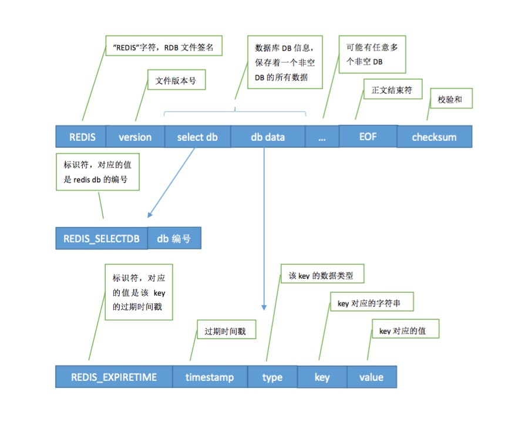
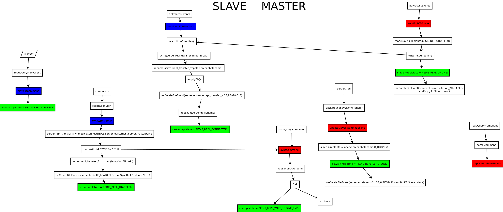
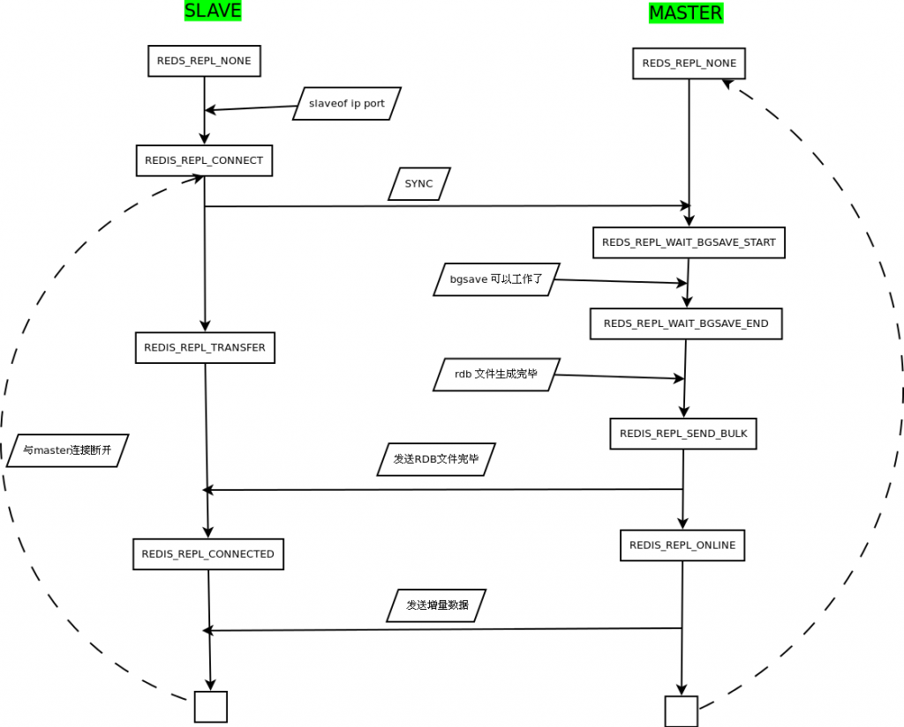

written by Alex Stocks on 2015/07/19
redis启动流程:
int main(int argc, char **argv) {
// 初始化conf
initServerConfig();
// 加载配置
if (argc >= 2) {
loadServerConfig(configfile,options);
sdsfree(options);
}
// 启动server
initServer();
// 启动linux的内存优化项[overcommit_memory & transparent_huge_page]，从磁盘加载数据
if (!server.sentinel_mode) {
/* Things not needed when running in Sentinel mode. */
redisLog(REDIS_WARNING,"Server started, Redis version " REDIS_VERSION);
#ifdef __linux__
linuxMemoryWarnings();
#endif
checkTcpBacklogSettings();
loadDataFromDisk();
}
// 开足马力，运转发动机
aeSetBeforeSleepProc(server.el,beforeSleep);
aeMain(server.el);
aeDeleteEventLoop(server.el);
return 0;
}初始化server.runid，并给replication相关参数赋值。
Linux中的随机数可以从两个特殊的文件中产生，一个是/dev/urandom.另外一个是/dev/random。他们产生随机数的原理是利用当前系统的熵池来计算出固定一定数量的随机比特，然后将这些比特作为字节流返回。
熵池就是当前系统的环境噪音，熵指的是一个系统的混乱程度，系统噪音可以通过很多参数来评估，如内存的使用，文件的使用量，不同类型的进程数量等等。如果当前环境噪音变化的不是很剧烈或者当前环境噪音很小，比如刚开机的时候，而当前需要大量的随机比特，这时产生的随机数的随机效果就不是很好了。这就是为什么会有/dev/urandom和/dev/random这两种不同的文件，后者在不能产生新的随机数时会阻塞程序，而前者不会（ublock），当然产生的随机数效果就不太好了，这对加密解密这样的应用来说就不是一种很好的选择。
/dev/random会阻塞当前的程序，直到根据熵池产生新的随机字节之后才返回，所以使用/dev/random比使用/dev/urandom产生大量随机数的速度要慢。
/*
* 这个函数为一个redis instance生成一个160bit的id
* (如果未来显示用则是320bit，即40个字母长度的可显示字符串)。
*/
void getRandomHexChars(char *p, unsigned int len)；
{
char *charset = "0123456789abcdef";
unsigned int j;
/* Global state. */
static int seed_initialized = 0;
static unsigned char seed[20]; /* The SHA1 seed, from /dev/urandom. */
static uint64_t counter = 0; /* The counter we hash with the seed. */
// 生成一个随机种子数，存储到seed里面
if (!seed_initialized) {
FILE *fp = fopen("/dev/urandom", "r");
if (fp && fread(seed, sizeof(seed), 1, fp) == 1)
seed_initialized = 1;
if (fp) fclose(fp);
}
if (seed_initialized) {
// 如果从/dev/urandom读取到了随机字符串，则利用SHA算法生成一个id
while (len) {
// len可能并不是20或者40字节的倍数，所以这里要通过循环把p的内容填满
unsigned char digest[20];
SHA1_CTX ctx;
unsigned int copylen = len > 20 ? 20 : len;
SHA1Init(&ctx);
SHA1Update(&ctx, seed, sizeof(seed));
SHA1Update(&ctx, (unsigned char*)&counter, sizeof(counter));
SHA1Final(digest, &ctx);
counter++;
memcpy(p, digest, copylen);
/* Convert to hex digits. */
// 把数字转化为可读字符串，只是这里只用了一个字节的后半部分
for (j = 0; j < copylen; j++) p[j] = charset[p[j] & 0x0F];
// 移动光标
len -= copylen;
p += copylen;
}
}
else {
// 如果从/dev/urandom读取随机字符串失败，则利用时间和当前进程的id来生成一个随机字符串
char *x = p;
unsigned int l = len;
struct timeval tv;
pid_t pid = getpid();
/* Use time and PID to fill the initial array. */
// 先在buf中填充时间的秒和微秒两个部分，然后再补充上进程的id
gettimeofday(&tv, NULL);
if (l >= sizeof(tv.tv_usec)) {
memcpy(x, &tv.tv_usec, sizeof(tv.tv_usec));
l -= sizeof(tv.tv_usec);
x += sizeof(tv.tv_usec);
}
if (l >= sizeof(tv.tv_sec)) {
memcpy(x, &tv.tv_sec, sizeof(tv.tv_sec));
l -= sizeof(tv.tv_sec);
x += sizeof(tv.tv_sec);
}
if (l >= sizeof(pid)) {
memcpy(x, &pid, sizeof(pid));
l -= sizeof(pid);
x += sizeof(pid);
}
// 再利用随机数进行异或后，转化为16进制可视字符串
for (j = 0; j < len; j++) {
p[j] ^= rand();
p[j] = charset[p[j] & 0x0F];
}
}
}
void initServerConfig(void) {
int j;
getRandomHexChars(server.runid,REDIS_RUN_ID_SIZE);
server.configfile = NULL;
server.hz = REDIS_DEFAULT_HZ;
server.runid[REDIS_RUN_ID_SIZE] = '\0';
server.arch_bits = (sizeof(long) == 8) ? 64 : 32;
server.port = REDIS_SERVERPORT;
server.repl_ping_slave_period = REDIS_REPL_PING_SLAVE_PERIOD;
server.repl_timeout = REDIS_REPL_TIMEOUT;
server.repl_min_slaves_to_write = REDIS_DEFAULT_MIN_SLAVES_TO_WRITE;
server.repl_min_slaves_max_lag = REDIS_DEFAULT_MIN_SLAVES_MAX_LAG;
/* Replication related */
server.masterauth = NULL;
server.masterhost = NULL;
server.masterport = 6379;
server.master = NULL;
server.cached_master = NULL;
server.repl_master_initial_offset = -1;
server.repl_state = REDIS_REPL_NONE;
server.repl_syncio_timeout = REDIS_REPL_SYNCIO_TIMEOUT;
server.repl_serve_stale_data = REDIS_DEFAULT_SLAVE_SERVE_STALE_DATA;
server.repl_slave_ro = REDIS_DEFAULT_SLAVE_READ_ONLY;
server.repl_down_since = 0; /* Never connected, repl is down since EVER. */
server.repl_disable_tcp_nodelay = REDIS_DEFAULT_REPL_DISABLE_TCP_NODELAY;
server.repl_diskless_sync = REDIS_DEFAULT_REPL_DISKLESS_SYNC;
server.repl_diskless_sync_delay = REDIS_DEFAULT_REPL_DISKLESS_SYNC_DELAY;
server.slave_priority = REDIS_DEFAULT_SLAVE_PRIORITY;
server.master_repl_offset = 0;
/* Replication partial resync backlog */
server.repl_backlog = NULL;
server.repl_backlog_size = REDIS_DEFAULT_REPL_BACKLOG_SIZE;
server.repl_backlog_histlen = 0;
server.repl_backlog_idx = 0;
server.repl_backlog_off = 0;
server.repl_backlog_time_limit = REDIS_DEFAULT_REPL_BACKLOG_TIME_LIMIT;
server.repl_no_slaves_since = time(NULL);
/* write index */
// server.write_index.start = (long long)((long long)(0XE20150620180647F) * getpid() * server.port * time(NULL));
server.write_index.start = 0;
server.write_index.current = server.write_index.start;
server.slave_write_index = dictCreate(&slaveWriteIndexDictType,NULL);
}如果进程启动的时候已经被赋予了redis的options，则使用这些options，不再读conf文件。
void loadServerConfig(char *filename, char *options) {
sds config = sdsempty();
char buf[REDIS_CONFIGLINE_MAX+1];
/* Load the file content */
if (filename) {
FILE *fp;
// 如果文件名称为空，则从stdin读取
if (filename[0] == '-' && filename[1] == '\0') {
fp = stdin;
} else {
if ((fp = fopen(filename,"r")) == NULL) {
redisLog(REDIS_WARNING,
"Fatal error, can't open config file '%s'", filename);
exit(1);
}
}
while(fgets(buf,REDIS_CONFIGLINE_MAX+1,fp) != NULL)
config = sdscat(config,buf);
if (fp != stdin) fclose(fp);
}
/* Append the additional options */
if (options) {
config = sdscat(config,"\n");
config = sdscat(config,options);
}
loadServerConfigFromString(config);
sdsfree(config);
}这个函数中比较重要的就是如果redis的role是slave，则获取master的host和port，并把state设置为REDISREPLCONNECT
void loadServerConfigFromString(char *config) {
char *err = NULL;
int linenum = 0, totlines, i;
int slaveof_linenum = 0;
sds *lines;
// 按照行进行分割，结果存在lines数组中，行数为totlines
lines = sdssplitlen(config,strlen(config),"\n",1,&totlines);
for (i = 0; i < totlines; i++) {
sds *argv;
int argc;
linenum = i+1; //记录行号，一旦出错，下面的loaderr就能说明出错所在的行号
// 去掉tab、换行、回车等空格键
lines[i] = sdstrim(lines[i]," \t\r\n");
// 不处理空行和注释行
if (lines[i][0] == '#' || lines[i][0] == '\0') continue;
// 把每行再进行分割，分割结果存进@argv数组，数组elem个数为args
argv = sdssplitargs(lines[i],&argc);
if (argv == NULL) { // 处理argv为空的情况
err = "Unbalanced quotes in configuration line";
goto loaderr;
}
if (argc == 0) { // 处理element number为0的情况
sdsfreesplitres(argv,argc);
continue;
}
sdstolower(argv[0]); // 把line key转换为消息
/* Execute config directives */
if (!strcasecmp(argv[0],"slaveof") && argc == 3) {
slaveof_linenum = linenum;
server.masterhost = sdsnew(argv[1]);
server.masterport = atoi(argv[2]);
server.repl_state = REDIS_REPL_CONNECT;
} else if (!strcasecmp(argv[0],"repl-ping-slave-period") && argc == 2) {
server.repl_ping_slave_period = atoi(argv[1]);
if (server.repl_ping_slave_period <= 0) {
err = "repl-ping-slave-period must be 1 or greater";
goto loaderr;
}
} else if (!strcasecmp(argv[0],"repl-timeout") && argc == 2) {
server.repl_timeout = atoi(argv[1]);
if (server.repl_timeout <= 0) {
err = "repl-timeout must be 1 or greater";
goto loaderr;
}
} else if (!strcasecmp(argv[0],"repl-disable-tcp-nodelay") && argc==2) {
if ((server.repl_disable_tcp_nodelay = yesnotoi(argv[1])) == -1) {
err = "argument must be 'yes' or 'no'"; goto loaderr;
}
} else if (!strcasecmp(argv[0],"repl-diskless-sync") && argc==2) {
if ((server.repl_diskless_sync = yesnotoi(argv[1])) == -1) {
err = "argument must be 'yes' or 'no'"; goto loaderr;
}
} else if (!strcasecmp(argv[0],"repl-diskless-sync-delay") && argc==2) {
server.repl_diskless_sync_delay = atoi(argv[1]);
if (server.repl_diskless_sync_delay < 0) {
err = "repl-diskless-sync-delay can't be negative";
goto loaderr;
}
} else if (!strcasecmp(argv[0],"repl-backlog-size") && argc == 2) {
long long size = memtoll(argv[1],NULL);
if (size <= 0) {
err = "repl-backlog-size must be 1 or greater.";
goto loaderr;
}
resizeReplicationBacklog(size);
} else if (!strcasecmp(argv[0],"repl-backlog-ttl") && argc == 2) {
server.repl_backlog_time_limit = atoi(argv[1]);
if (server.repl_backlog_time_limit < 0) {
err = "repl-backlog-ttl can't be negative ";
goto loaderr;
}
}
else {
err = "Bad directive or wrong number of arguments"; goto loaderr;
}
// 释放element数组
sdsfreesplitres(argv,argc);
}
// 释放line数组
sdsfreesplitres(lines,totlines);
return;
loaderr:
fprintf(stderr, "\n*** FATAL CONFIG FILE ERROR ***\n");
fprintf(stderr, "Reading the configuration file, at line %d\n", linenum);
fprintf(stderr, ">>> '%s'\n", lines[i]);
fprintf(stderr, "%s\n", err);
exit(1);
}static int anetListen(char *err, int s, struct sockaddr *sa, socklen_t len, int backlog) {
if (bind(s,sa,len) == -1) {
anetSetError(err, "bind: %s", strerror(errno));
close(s);
return ANET_ERR;
}
if (listen(s, backlog) == -1) {
anetSetError(err, "listen: %s", strerror(errno));
close(s);
return ANET_ERR;
}
return ANET_OK;
}
static int _anetTcpServer(char *err, int port, char *bindaddr, int af, int backlog)
{
int s, rv;
char _port[6]; /* strlen("65535") */
struct addrinfo hints, *servinfo, *p;
snprintf(_port,6,"%d",port);
memset(&hints,0,sizeof(hints));
hints.ai_family = af;
hints.ai_socktype = SOCK_STREAM;
hints.ai_flags = AI_PASSIVE; /* No effect if bindaddr != NULL */
if ((rv = getaddrinfo(bindaddr,_port,&hints,&servinfo)) != 0) {
anetSetError(err, "%s", gai_strerror(rv));
return ANET_ERR;
}
for (p = servinfo; p != NULL; p = p->ai_next) {
if ((s = socket(p->ai_family,p->ai_socktype,p->ai_protocol)) == -1)
continue;
if (af == AF_INET6 && anetV6Only(err,s) == ANET_ERR) goto error;
if (anetSetReuseAddr(err,s) == ANET_ERR) goto error;
if (anetListen(err,s,p->ai_addr,p->ai_addrlen,backlog) == ANET_ERR) goto error;
goto end;
}
if (p == NULL) {
anetSetError(err, "unable to bind socket");
goto error;
}
error:
s = ANET_ERR;
end:
freeaddrinfo(servinfo);
return s;
}
int anetTcpServer(char *err, int port, char *bindaddr, int backlog)
{
return _anetTcpServer(err, port, bindaddr, AF_INET, backlog);
}
int listenToPort(int port, int *fds, int *count) {
int j;
/* Force binding of 0.0.0.0 if no bind address is specified, always
* entering the loop if j == 0. */
if (server.bindaddr_count == 0) server.bindaddr[0] = NULL;
for (j = 0; j < server.bindaddr_count || j == 0; j++) {
if (server.bindaddr[j] == NULL) {
/* Bind * for both IPv6 and IPv4, we enter here only if
* server.bindaddr_count == 0. */
fds[*count] = anetTcp6Server(server.neterr,port,NULL,
server.tcp_backlog);
if (fds[*count] != ANET_ERR) {
anetNonBlock(NULL,fds[*count]);
(*count)++;
}
fds[*count] = anetTcpServer(server.neterr,port,NULL,
server.tcp_backlog);
if (fds[*count] != ANET_ERR) {
anetNonBlock(NULL,fds[*count]);
(*count)++;
}
/* Exit the loop if we were able to bind * on IPv4 or IPv6,
* otherwise fds[*count] will be ANET_ERR and we'll print an
* error and return to the caller with an error. */
if (*count) break;
} else if (strchr(server.bindaddr[j],':')) {
/* Bind IPv6 address. */
fds[*count] = anetTcp6Server(server.neterr,port,server.bindaddr[j],
server.tcp_backlog);
} else {
/* Bind IPv4 address. */
fds[*count] = anetTcpServer(server.neterr,port,server.bindaddr[j],
server.tcp_backlog);
}
if (fds[*count] == ANET_ERR) {
redisLog(REDIS_WARNING,
"Creating Server TCP listening socket %s:%d: %s",
server.bindaddr[j] ? server.bindaddr[j] : "*",
port, server.neterr);
return REDIS_ERR;
}
anetNonBlock(NULL,fds[*count]);
(*count)++;
}
return REDIS_OK;
}
void initServer(void) {
/* Open the TCP listening socket for the user commands. */
if (server.port != 0 &&
listenToPort(server.port,server.ipfd,&server.ipfd_count) == REDIS_ERR)
exit(1);
}
}void initServer(void) {
/* Create an event handler for accepting new connections in TCP and Unix
* domain sockets. */
for (j = 0; j < server.ipfd_count; j++) {
if (aeCreateFileEvent(server.el, server.ipfd[j], AE_READABLE,
acceptTcpHandler,NULL) == AE_ERR)
{
redisPanic(
"Unrecoverable error creating server.ipfd file event.");
}
}
}static int anetGenericAccept(char *err, int s, struct sockaddr *sa, socklen_t *len) {
int fd;
while(1) {
fd = accept(s,sa,len);
if (fd == -1) {
if (errno == EINTR)
continue;
else {
anetSetError(err, "accept: %s", strerror(errno));
return ANET_ERR;
}
}
break;
}
return fd;
}
int anetTcpAccept(char *err, int s, char *ip, size_t ip_len, int *port) {
int fd;
struct sockaddr_storage sa;
socklen_t salen = sizeof(sa);
if ((fd = anetGenericAccept(err,s,(struct sockaddr*)&sa,&salen)) == -1)
return ANET_ERR;
if (sa.ss_family == AF_INET) {
struct sockaddr_in *s = (struct sockaddr_in *)&sa;
if (ip) inet_ntop(AF_INET,(void*)&(s->sin_addr),ip,ip_len);
if (port) *port = ntohs(s->sin_port);
} else {
struct sockaddr_in6 *s = (struct sockaddr_in6 *)&sa;
if (ip) inet_ntop(AF_INET6,(void*)&(s->sin6_addr),ip,ip_len);
if (port) *port = ntohs(s->sin6_port);
}
return fd;
}创建客户端后注册接受client的请求的回调函数readQueryFromClient，最后把客户端放入server的客户端集合:server.clients。
如果client集合超限[默认是10000]就给client返回err msg，然后再释放client句柄并关闭连接。
redisClient *createClient(int fd) {
redisClient *c = zmalloc(sizeof(redisClient));
/* passing -1 as fd it is possible to create a non connected client.
* This is useful since all the Redis commands needs to be executed
* in the context of a client. When commands are executed in other
* contexts (for instance a Lua script) we need a non connected client. */
if (fd != -1) {
anetNonBlock(NULL,fd);
// 把fd设置为nodelay类型，有利于数据及时发送给客户端
anetEnableTcpNoDelay(NULL,fd);
if (server.tcpkeepalive)
anetKeepAlive(NULL,fd,server.tcpkeepalive);
// 注册接受客户端请求的函数
if (aeCreateFileEvent(server.el,fd,AE_READABLE,
readQueryFromClient, c) == AE_ERR)
{
close(fd);
zfree(c);
return NULL;
}
}
// 把外部请求客户端放入客户端集合，即fake client是不会被放进去的
if (fd != -1) listAddNodeTail(server.clients,c);
initClientMultiState(c);
return c;
}
#define MAX_ACCEPTS_PER_CALL 1000
static void acceptCommonHandler(int fd, int flags) {
redisClient *c;
if ((c = createClient(fd)) == NULL) {
redisLog(REDIS_WARNING,
"Error registering fd event for the new client: %s (fd=%d)",
strerror(errno),fd);
close(fd); /* May be already closed, just ignore errors */
return;
}
/* If maxclient directive is set and this is one client more... close the
* connection. Note that we create the client instead to check before
* for this condition, since now the socket is already set in non-blocking
* mode and we can send an error for free using the Kernel I/O */
// 如果连接过多[#define REDIS_MAX_CLIENTS 10000]，先给client发送一个error msg，
// 然后就把连接代表的client给free掉
//
// 这里解释了为何最后才检查超限的原因：需要给客户端发送error message，以让用户明白错误的原因。
if (listLength(server.clients) > server.maxclients) {
char *err = "-ERR max number of clients reached\r\n";
/* That's a best effort error message, don't check write errors */
if (write(c->fd,err,strlen(err)) == -1) {
/* Nothing to do, Just to avoid the warning... */
}
server.stat_rejected_conn++;
freeClient(c);
return;
}
server.stat_numconnections++;
c->flags |= flags;
}目前逻辑步骤是：接受客户端的请求；创建对应的client句柄；插入client集合；检查client集合是否超限。
那为什么不先检查server.clients的数目后直接把超限的连接请求给拒绝掉呢？
acceptCommonHandler()函数里给出了一段解释：需要给客户端发送error message，以让用户明白错误的原因。
// 接受外部请求，一次最多接受1000个请求
void acceptTcpHandler(aeEventLoop *el, int fd, void *privdata, int mask) {
int cport, cfd, max = MAX_ACCEPTS_PER_CALL;
char cip[REDIS_IP_STR_LEN];
REDIS_NOTUSED(el);
REDIS_NOTUSED(mask);
REDIS_NOTUSED(privdata);
while(max--) {
cfd = anetTcpAccept(server.neterr, fd, cip, sizeof(cip), &cport);
if (cfd == ANET_ERR) {
if (errno != EWOULDBLOCK)
redisLog(REDIS_WARNING,
"Accepting client connection: %s", server.neterr);
return;
}
redisLog(REDIS_VERBOSE,"Accepted %s:%d", cip, cport);
acceptCommonHandler(cfd,0);
}
}overcommitmemory文件指定了内核针对内存分配的策略，overcommitmemory值可以是0、1、2。
int linuxOvercommitMemoryValue(void) {
FILE *fp = fopen("/proc/sys/vm/overcommit_memory","r");
char buf[64];
if (!fp) return -1;
if (fgets(buf,64,fp) == NULL) {
fclose(fp);
return -1;
}
fclose(fp);
return atoi(buf);
}Transparent Huge Page用户合并物理内存的page
内核线程khugepaged周期性自动扫描内存，自动将地址连续可以合并的4KB的普通Page并成2MB的Huge Page。
Redhat系统，通过内核参数/sys/kernel/mm/redhattransparenthugepage/enabled打开.
其他Linux系统，通过内核参数/sys/kernel/mm/transparent_hugepage/enabled打开.
/* Returns 1 if Transparent Huge Pages support is enabled in the kernel.
* Otherwise (or if we are unable to check) 0 is returned. */
int THPIsEnabled(void) {
char buf[1024];
FILE *fp = fopen("/sys/kernel/mm/transparent_hugepage/enabled","r");
if (!fp) return 0;
if (fgets(buf,sizeof(buf),fp) == NULL) {
fclose(fp);
return 0;
}
fclose(fp);
return (strstr(buf,"[never]") == NULL) ? 1 : 0;
}void linuxMemoryWarnings(void) {
if (linuxOvercommitMemoryValue() == 0) {
redisLog(REDIS_WARNING,"WARNING overcommit_memory is set to 0! Background save may fail under low memory condition. To fix this issue add 'vm.overcommit_memory = 1' to /etc/sysctl.conf and then reboot or run the command 'sysctl vm.overcommit_memory=1' for this to take effect.");
}
if (THPIsEnabled()) {
redisLog(REDIS_WARNING,"WARNING you have Transparent Huge Pages (THP) support enabled in your kernel. This will create latency and memory usage issues with Redis. To fix this issue run the command 'echo never > /sys/kernel/mm/transparent_hugepage/enabled' as root, and add it to your /etc/rc.local in order to retain the setting after a reboot. Redis must be restarted after THP is disabled.");
}
}/* Function called at startup to load RDB or AOF file in memory. */
void loadDataFromDisk(void) {
long long start = ustime();
if (server.aof_state == REDIS_AOF_ON) {
// aof模式下记载aof文件
if (loadAppendOnlyFile(server.aof_filename) == REDIS_OK)
redisLog(REDIS_NOTICE,"DB loaded from append only file: %.3f seconds",(float)(ustime()-start)/1000000);
} else {
// 加载rdb文件
if (rdbLoad(server.rdb_filename) == REDIS_OK) {
redisLog(REDIS_NOTICE,"DB loaded from disk: %.3f seconds",
(float)(ustime()-start)/1000000);
} else if (errno != ENOENT) {
redisLog(REDIS_WARNING,"Fatal error loading the DB: %s. Exiting.",strerror(errno));
exit(1);
}
}
}fake client用于aof模式下load aof文件的时候，重放客户端请求然后把数据写进内存。redis不会对其进行回复。
int prepareClientToWrite(redisClient *c) {
if (c->fd <= 0) return REDIS_ERR; /* Fake client for AOF loading. */
}
// 在给client回复的时候，如果判别出是fake clent则不会对client进行回复
void addReply(redisClient *c, robj *obj) {
if (prepareClientToWrite(c) != REDIS_OK) return;
}
/* In Redis commands are always executed in the context of a client, so in
* order to load the append only file we need to create a fake client. */
// 创建一个fake client，用于重放aof文件
struct redisClient *createFakeClient(void) {
struct redisClient *c = zmalloc(sizeof(*c));
selectDb(c,0);
c->fd = -1; // redis根据fd判断其是否为一个fake client
c->name = NULL;
c->querybuf = sdsempty();
c->querybuf_peak = 0;
c->argc = 0;
c->argv = NULL;
c->bufpos = 0;
c->flags = 0;
c->btype = REDIS_BLOCKED_NONE;
/* We set the fake client as a slave waiting for the synchronization
* so that Redis will not try to send replies to this client. */
c->replstate = REDIS_REPL_WAIT_BGSAVE_START;
c->reply = listCreate();
c->reply_bytes = 0;
c->obuf_soft_limit_reached_time = 0;
c->watched_keys = listCreate();
c->peerid = NULL;
listSetFreeMethod(c->reply,decrRefCountVoid);
listSetDupMethod(c->reply,dupClientReplyValue);
initClientMultiState(c);
return c;
}/* Mark that we are loading in the global state and setup the fields
* needed to provide loading stats. */
// 设置loading flag为1
void startLoading(FILE *fp) {
struct stat sb;
/* Load the DB */
server.loading = 1;
server.loading_start_time = time(NULL);
server.loading_loaded_bytes = 0;
if (fstat(fileno(fp), &sb) == -1) {
server.loading_total_bytes = 0;
} else {
server.loading_total_bytes = sb.st_size;
}
}
/* Loading finished */
// 设置loading flag为0
void stopLoading(void) {
server.loading = 0;
}
/* This function is called by Redis in order to process a few events from
* time to time while blocked into some not interruptible operation.
* This allows to reply to clients with the -LOADING error while loading the
* data set at startup or after a full resynchronization with the master
* and so forth.
*
* It calls the event loop in order to process a few events. Specifically we
* try to call the event loop for times as long as we receive acknowledge that
* some event was processed, in order to go forward with the accept, read,
* write, close sequence needed to serve a client.
*
* The function returns the total number of events processed. */
// 阻塞在某个任务上时，抽出时间执行一些外部的请求任务
int processEventsWhileBlocked(void) {
int iterations = 4; /* See the function top-comment. */
int count = 0;
while (iterations--) {
int events = aeProcessEvents(server.el, AE_FILE_EVENTS|AE_DONT_WAIT);
if (!events) break;
count += events;
}
return count;
}
/* Replay the append log file. On success REDIS_OK is returned. On non fatal
* error (the append only file is zero-length) REDIS_ERR is returned. On
* fatal error an error message is logged and the program exists. */
// 重放aof文件，成功返回REDIS_OK，遇到fatal error[aof文件大小为0]则返回REDIS_ERR
// 遇到fatal error，则把错误信息写入log，redis退出
int loadAppendOnlyFile(char *filename) {
struct redisClient *fakeClient;
FILE *fp = fopen(filename,"r");
struct redis_stat sb;
int old_aof_state = server.aof_state;
long loops = 0;
off_t valid_up_to = 0; /* Offset of the latest well-formed command loaded. */
// 文件大小为0
if (fp && redis_fstat(fileno(fp),&sb) != -1 && sb.st_size == 0) {
server.aof_current_size = 0;
fclose(fp);
return REDIS_ERR;
}
if (fp == NULL) {
redisLog(REDIS_WARNING,"Fatal error: can't open the append log file for reading: %s",strerror(errno));
exit(1);
}
/* Temporarily disable AOF, to prevent EXEC from feeding a MULTI
* to the same file we're about to read. */
// 设置状态为REDIS_AOF_OFF，防止redis向aof文件写数据
server.aof_state = REDIS_AOF_OFF;
fakeClient = createFakeClient();
startLoading(fp); // 设置server.loading为1
while(1) {
int argc, j;
unsigned long len;
robj **argv;
char buf[128];
sds argsds;
struct redisCommand *cmd;
/* Serve the clients from time to time */
if (!(loops++ % 1000)) {
loadingProgress(ftello(fp)); // server.loading_loaded_bytes = pos;
processEventsWhileBlocked();
}
if (fgets(buf,sizeof(buf),fp) == NULL) {
if (feof(fp))
break;
else
goto readerr;
}
if (buf[0] != '*') goto fmterr;
if (buf[1] == '\0') goto readerr;
argc = atoi(buf+1); // 有效参数个数
if (argc < 1) goto fmterr;
argv = zmalloc(sizeof(robj*)*argc);
fakeClient->argc = argc;
fakeClient->argv = argv;
// 循环读出所有的参数
for (j = 0; j < argc; j++) {
if (fgets(buf,sizeof(buf),fp) == NULL) {
fakeClient->argc = j; /* Free up to j-1. */
freeFakeClientArgv(fakeClient);
goto readerr;
}
if (buf[0] != '$') goto fmterr;
len = strtol(buf+1,NULL,10);
argsds = sdsnewlen(NULL,len);
if (len && fread(argsds,len,1,fp) == 0) {
sdsfree(argsds);
fakeClient->argc = j; /* Free up to j-1. */
freeFakeClientArgv(fakeClient);
goto readerr;
}
argv[j] = createObject(REDIS_STRING,argsds); // 为某个参数赋值
if (fread(buf,2,1,fp) == 0) {
fakeClient->argc = j+1; /* Free up to j. */
freeFakeClientArgv(fakeClient);
goto readerr; /* discard CRLF */
}
}
/* Command lookup */
// 查找命令是否有效
cmd = lookupCommand(argv[0]->ptr);
if (!cmd) {
redisLog(REDIS_WARNING,"Unknown command '%s' reading the append only file", (char*)argv[0]->ptr);
exit(1);
}
/* Run the command in the context of a fake client */
// 重放命令
cmd->proc(fakeClient);
/* The fake client should not have a reply */
// fake client不应该收到reply
redisAssert(fakeClient->bufpos == 0 && listLength(fakeClient->reply) == 0);
/* The fake client should never get blocked */
// fake client不应该处于blocked模式
redisAssert((fakeClient->flags & REDIS_BLOCKED) == 0);
/* Clean up. Command code may have changed argv/argc so we use the
* argv/argc of the client instead of the local variables. */
// 释放假连接的argv资源
freeFakeClientArgv(fakeClient);
if (server.aof_load_truncated) valid_up_to = ftello(fp);
}
/* This point can only be reached when EOF is reached without errors.
* If the client is in the middle of a MULTI/EXEC, log error and quit. */
if (fakeClient->flags & REDIS_MULTI) goto uxeof;
loaded_ok: /* DB loaded, cleanup and return REDIS_OK to the caller. */
fclose(fp);
freeFakeClient(fakeClient);
server.aof_state = old_aof_state;
stopLoading();
aofUpdateCurrentSize();
server.aof_rewrite_base_size = server.aof_current_size;
return REDIS_OK;
readerr: /* Read error. If feof(fp) is true, fall through to unexpected EOF. */
if (!feof(fp)) {
redisLog(REDIS_WARNING,"Unrecoverable error reading the append only file: %s", strerror(errno));
exit(1);
}
uxeof: /* Unexpected AOF end of file. */
if (server.aof_load_truncated) {
redisLog(REDIS_WARNING,"!!! Warning: short read while loading the AOF file !!!");
redisLog(REDIS_WARNING,"!!! Truncating the AOF at offset %llu !!!",
(unsigned long long) valid_up_to);
if (valid_up_to == -1 || truncate(filename,valid_up_to) == -1) {
if (valid_up_to == -1) {
redisLog(REDIS_WARNING,"Last valid command offset is invalid");
} else {
redisLog(REDIS_WARNING,"Error truncating the AOF file: %s",
strerror(errno));
}
} else {
/* Make sure the AOF file descriptor points to the end of the
* file after the truncate call. */
if (server.aof_fd != -1 && lseek(server.aof_fd,0,SEEK_END) == -1) {
redisLog(REDIS_WARNING,"Can't seek the end of the AOF file: %s",
strerror(errno));
} else {
redisLog(REDIS_WARNING,
"AOF loaded anyway because aof-load-truncated is enabled");
goto loaded_ok;
}
}
}
redisLog(REDIS_WARNING,"Unexpected end of file reading the append only file. You can: 1) Make a backup of your AOF file, then use ./redis-check-aof --fix <filename>. 2) Alternatively you can set the 'aof-load-truncated' configuration option to yes and restart the server.");
exit(1);
fmterr: /* Format error. */
redisLog(REDIS_WARNING,"Bad file format reading the append only file: make a backup of your AOF file, then use ./redis-check-aof --fix <filename>");
exit(1);
}rdb文件中有这两个字段：repl-id和repl-offset，对应redis代码中masterreplid和masterrepl_offsetreplication一文中说明这两个字段唯一的标记了redis master的一组dataset。
如果rdb文件不存在，则redis启动的时候初始offset为0；存在，则id和offset继承自rdb文件中的这两个字段值。
rdb的文件格式如下： 
int rdbLoad(char *filename) {
uint32_t dbid;
int type, rdbver;
redisDb *db = server.db+0;
char buf[1024];
long long expiretime, now = mstime();
FILE *fp;
rio rdb;
if ((fp = fopen(filename,"r")) == NULL) return REDIS_ERR;
rioInitWithFile(&rdb,fp);
rdb.update_cksum = rdbLoadProgressCallback;
rdb.max_processing_chunk = server.loading_process_events_interval_bytes;
if (rioRead(&rdb,buf,9) == 0) goto eoferr;
buf[9] = '\0';
// 检查文件开头
if (memcmp(buf,"REDIS",5) != 0) {
fclose(fp);
redisLog(REDIS_WARNING,"Wrong signature trying to load DB from file");
errno = EINVAL;
return REDIS_ERR;
}
rdbver = atoi(buf+5);
if (rdbver < 1 || rdbver > REDIS_RDB_VERSION) {
fclose(fp);
redisLog(REDIS_WARNING,"Can't handle RDB format version %d",rdbver);
errno = EINVAL;
return REDIS_ERR;
}
startLoading(fp);
while(1) {
robj *key, *val;
expiretime = -1;
/* Read type. */
// 读取key的超时时间
if ((type = rdbLoadType(&rdb)) == -1) goto eoferr;
if (type == REDIS_RDB_OPCODE_EXPIRETIME) {
if ((expiretime = rdbLoadTime(&rdb)) == -1) goto eoferr;
/* We read the time so we need to read the object type again. */
if ((type = rdbLoadType(&rdb)) == -1) goto eoferr;
/* the EXPIRETIME opcode specifies time in seconds, so convert
* into milliseconds. */
expiretime *= 1000;
} else if (type == REDIS_RDB_OPCODE_EXPIRETIME_MS) {
/* Milliseconds precision expire times introduced with RDB
* version 3. */
if ((expiretime = rdbLoadMillisecondTime(&rdb)) == -1) goto eoferr;
/* We read the time so we need to read the object type again. */
if ((type = rdbLoadType(&rdb)) == -1) goto eoferr;
}
// 到了文件末尾，终止流程
if (type == REDIS_RDB_OPCODE_EOF)
break;
/* Handle SELECT DB opcode as a special case */
// 切换db
if (type == REDIS_RDB_OPCODE_SELECTDB) {
if ((dbid = rdbLoadLen(&rdb,NULL)) == REDIS_RDB_LENERR)
goto eoferr;
if (dbid >= (unsigned)server.dbnum) {
redisLog(REDIS_WARNING,"FATAL: Data file was created with a Redis server configured to handle more than %d databases. Exiting\n", server.dbnum);
exit(1);
}
db = server.db+dbid;
continue;
}
/* Read key */
// 获取key
if ((key = rdbLoadStringObject(&rdb)) == NULL) goto eoferr;
/* Read value */
// 获取value
if ((val = rdbLoadObject(type,&rdb)) == NULL) goto eoferr;
/* Check if the key already expired. This function is used when loading
* an RDB file from disk, either at startup, or when an RDB was
* received from the master. In the latter case, the master is
* responsible for key expiry. If we would expire keys here, the
* snapshot taken by the master may not be reflected on the slave. */
// 判断key是否超时
if (server.masterhost == NULL && expiretime != -1 && expiretime < now) {
decrRefCount(key);
decrRefCount(val);
continue;
}
/* Add the new object in the hash table */
// 如果没有超时，则插入数据库
dbAdd(db,key,val);
/* Set the expire time if needed */
// 设置key的超时时间
if (expiretime != -1) setExpire(db,key,expiretime);
// 释放key
decrRefCount(key);
}
/* Verify the checksum if RDB version is >= 5 */
// 读取文件的checksum，判断其rdb是否完整
if (rdbver >= 5 && server.rdb_checksum) {
uint64_t cksum, expected = rdb.cksum;
if (rioRead(&rdb,&cksum,8) == 0) goto eoferr;
memrev64ifbe(&cksum);
if (cksum == 0) {
redisLog(REDIS_WARNING,"RDB file was saved with checksum disabled: no check performed.");
} else if (cksum != expected) {
redisLog(REDIS_WARNING,"Wrong RDB checksum. Aborting now.");
exit(1);
}
}
fclose(fp);
stopLoading();
return REDIS_OK;
eoferr: /* unexpected end of file is handled here with a fatal exit */
redisLog(REDIS_WARNING,"Short read or OOM loading DB. Unrecoverable error, aborting now.");
exit(1);
return REDIS_ERR; /* Just to avoid warning */
}正常运行的实例[master or slave]，收到slaveof命令后更换master，启动slave模式。
先断绝与已有的master以及slaves之间的连接，并放弃收到的或者将要发出的增量同步数据，然后初始化相关配置，设置状态为REDISREPLCONNECT。
void slaveofCommand(redisClient *c) {
long port;
if ((getLongFromObjectOrReply(c, c->argv[2], &port, NULL) != REDIS_OK))
return;
/* Check if we are already attached to the specified slave */
// 如果已经attach到指定的master[host:port]，则拒绝再次重连，返回ok
if (server.masterhost && !strcasecmp(server.masterhost,c->argv[1]->ptr)
&& server.masterport == port) {
redisLog(REDIS_NOTICE,"SLAVE OF would result into synchronization with the master we are already connected with. No operation performed.");
addReplySds(c,sdsnew("+OK Already connected to specified master\r\n"));
return;
}
/* There was no previous master or the user specified a different one,
* we can continue. */
// 连接指定的redis instance
replicationSetMaster(c->argv[1]->ptr, port);
redisLog(REDIS_NOTICE,"SLAVE OF %s:%d enabled (user request)",
addReply(c,shared.ok);
}
/* Set replication to the specified master address and port. */
void replicationSetMaster(char *ip, int port) {
sdsfree(server.masterhost);
server.masterhost = sdsnew(ip);
server.masterport = port;
if (server.master) freeClient(server.master); // 断开与旧的master之间的连接
disconnectAllBlockedClients(); /* Clients blocked in master, now slave. */ // 断开与所有client之间的连接
disconnectSlaves(); /* Force our slaves to resync with us as well. */ // 断开与所有slave之间的连接
replicationDiscardCachedMaster(); /* Don't try a PSYNC. */ // 放弃master发来的增量数据
freeReplicationBacklog(); /* Don't allow our chained slaves to PSYNC. */ // 不再把增量数据同步给slaves
cancelReplicationHandshake(); // 停止心跳
// 设置replication初始状态以及相关字段数据，同loadServerConfigFromString分析slaveof配置时设置相关字段的值一样
server.repl_state = REDIS_REPL_CONNECT;
server.master_repl_offset = 0;
server.repl_down_since = 0;
}redis的timer响应函数ServerCron每秒调用一次replication的周期函数replicationCron。这个函数检查到slave还没有成功连接master时，先进行连接动作。
连接动作由connectWithMaster完成。连接过程中会发出psync命令，尔后把状态更改为REDISREPLCONNECTING。
int serverCron(struct aeEventLoop *eventLoop, long long id, void *clientData) {
/* Replication cron function -- used to reconnect to master and
* to detect transfer failures. */
run_with_period(1000) replicationCron();
}
/* Replication cron function, called 1 time per second. */
void replicationCron(void) {
/* Check if we should connect to a MASTER */
if (server.repl_state == REDIS_REPL_CONNECT) {
redisLog(REDIS_NOTICE,"Connecting to MASTER %s:%d",
server.masterhost, server.masterport);
if (connectWithMaster() == REDIS_OK) {
redisLog(REDIS_NOTICE,"MASTER <-> SLAVE sync started");
}
}
}
int connectWithMaster(void) {
int fd;
fd = anetTcpNonBlockBindConnect(NULL,
server.masterhost,server.masterport,REDIS_BIND_ADDR);
if (fd == -1) {
redisLog(REDIS_WARNING,"Unable to connect to MASTER: %s",
strerror(errno));
return REDIS_ERR;
}
if (aeCreateFileEvent(server.el,fd,AE_READABLE|AE_WRITABLE,syncWithMaster,NULL) ==
AE_ERR)
{
close(fd);
redisLog(REDIS_WARNING,"Can't create readable event for SYNC");
return REDIS_ERR;
}
server.repl_transfer_lastio = server.unixtime;
server.repl_transfer_s = fd;
server.repl_state = REDIS_REPL_CONNECTING;
return REDIS_OK;
}如果处于REDISREPLCONNECTING or REDISREPLRECEIVEPONG的状态，而且距离上次接收数据时间已经超时，则断开与master之间的连接，把状态置为REDISREPL_CONNECT。
void replicationCron(void) {
/* Non blocking connection timeout? */
if (server.masterhost &&
(server.repl_state == REDIS_REPL_CONNECTING ||
server.repl_state == REDIS_REPL_RECEIVE_PONG) &&
(time(NULL)-server.repl_transfer_lastio) > server.repl_timeout)
{
redisLog(REDIS_WARNING,"Timeout connecting to the MASTER...");
undoConnectWithMaster();
}
}
void undoConnectWithMaster(void) {
int fd = server.repl_transfer_s;
redisAssert(server.repl_state == REDIS_REPL_CONNECTING ||
server.repl_state == REDIS_REPL_RECEIVE_PONG);
aeDeleteFileEvent(server.el,fd,AE_READABLE|AE_WRITABLE);
close(fd);
server.repl_transfer_s = -1;
server.repl_state = REDIS_REPL_CONNECT;
}正常的connect异步流程是：先connect，而后判断fd是否可写，最后再判断连接是否有误。而上面的连接过程中，connect成功后就直接发出了PSYNC命令，所以收到其reply函数syncWithMaster就意味着server.synctransfers确实可写。
syncWithMaster函数起始逻辑就是判断fd是否有error，这个是继续连接流程的第三步，如果没有error就可以确认连接可读可写而且没有error，此时就可以删除对可写事件的关注。
确定没有错误后再发出PING命令，状态更改为REDISREPLRECEIVE_PONG。
void syncWithMaster(aeEventLoop *el, int fd, void *privdata, int mask) {
char tmpfile[256], *err;
int dfd, maxtries = 5;
int sockerr = 0, psync_result;
socklen_t errlen = sizeof(sockerr);
REDIS_NOTUSED(el);
REDIS_NOTUSED(privdata);
REDIS_NOTUSED(mask);
/* If this event fired after the user turned the instance into a master
* with SLAVEOF NO ONE we must just return ASAP. */
// 如果收到了SLAVEOF NO ONE命令，则立即关闭与master之间的连接，并退出
if (server.repl_state == REDIS_REPL_NONE) {
close(fd);
return;
}
// 检查连接是否有问题
/* Check for errors in the socket. */
if (getsockopt(fd, SOL_SOCKET, SO_ERROR, &sockerr, &errlen) == -1)
sockerr = errno;
if (sockerr) {
aeDeleteFileEvent(server.el,fd,AE_READABLE|AE_WRITABLE);
redisLog(REDIS_WARNING,"Error condition on socket for SYNC: %s",
strerror(sockerr));
goto error;
}
/* If we were connecting, it's time to send a non blocking PING, we want to
* make sure the master is able to reply before going into the actual
* replication process where we have long timeouts in the order of
* seconds (in the meantime the slave would block). */
// 如果还在连接中而未确认连接已经成功，需要确认master能够对PING命令回复PONG，则需要以阻塞形式把PING命令发送出去
if (server.repl_state == REDIS_REPL_CONNECTING) {
redisLog(REDIS_NOTICE,"Non blocking connect for SYNC fired the event.");
/* Delete the writable event so that the readable event remains
* registered and we can wait for the PONG reply. */
// 删除写事件，只保留读事件，等地啊PONG响应
aeDeleteFileEvent(server.el,fd,AE_WRITABLE);
server.repl_state = REDIS_REPL_RECEIVE_PONG;
/* Send the PING, don't check for errors at all, we have the timeout
* that will take care about this. */
// 此处并不检查是否遇到error，如果超时后内容还没有发送出去，上面2.2小节与处理这个逻辑：超时处理
syncWrite(fd,"PING\r\n",6,100);
return;
}
}/* Wait for milliseconds until the given file descriptor becomes
* writable/readable/exception */
// 借用poll函数阻塞@milliseconds，然后判断@fd是否满足条件@mask
int aeWait(int fd, int mask, long long milliseconds) {
struct pollfd pfd;
int retmask = 0, retval;
memset(&pfd, 0, sizeof(pfd));
pfd.fd = fd;
if (mask & AE_READABLE) pfd.events |= POLLIN;
if (mask & AE_WRITABLE) pfd.events |= POLLOUT;
if ((retval = poll(&pfd, 1, milliseconds))== 1) {
if (pfd.revents & POLLIN) retmask |= AE_READABLE;
if (pfd.revents & POLLOUT) retmask |= AE_WRITABLE;
if (pfd.revents & POLLERR) retmask |= AE_WRITABLE;
if (pfd.revents & POLLHUP) retmask |= AE_WRITABLE;
return retmask;
} else {
return retval;
}
}
/* Redis performs most of the I/O in a nonblocking way, with the exception
* of the SYNC command where the slave does it in a blocking way, and
* the MIGRATE command that must be blocking in order to be atomic from the
* point of view of the two instances (one migrating the key and one receiving
* the key). This is why need the following blocking I/O functions.
*
* All the functions take the timeout in milliseconds. */
// redis执行大部分命令都是以异步方式运行，但sync和migrate任务除外。
// 因为migrate任务是执行数据同步工作，命令执行完就意味着两端的数据是一样的，所以须以同步方式执行
#define REDIS_SYNCIO_RESOLUTION 10 /* Resolution in milliseconds */
/* Write the specified payload to 'fd'. If writing the whole payload will be
* done within 'timeout' milliseconds the operation succeeds and 'size' is
* returned. Otherwise the operation fails, -1 is returned, and an unspecified
* partial write could be performed against the file descriptor. */
// 以阻塞形式把ptr[size]通过连接@fd发送出去
ssize_t syncWrite(int fd, char *ptr, ssize_t size, long long timeout) {
ssize_t nwritten, ret = size;
long long start = mstime();
long long remaining = timeout;
while(1) {
// 修正等待时间为10ms，因为linux给每个进程分配的时间片长度是10ms
long long wait = (remaining > REDIS_SYNCIO_RESOLUTION) ?
remaining : REDIS_SYNCIO_RESOLUTION;
long long elapsed;
/* Optimistically try to write before checking if the file descriptor
* is actually writable. At worst we get EAGAIN. */
nwritten = write(fd,ptr,size);
if (nwritten == -1) {
if (errno != EAGAIN) return -1;
} else {
ptr += nwritten;
size -= nwritten;
}
if (size == 0) return ret;
/* Wait */
aeWait(fd,AE_WRITABLE,wait);
elapsed = mstime() - start;
if (elapsed >= timeout) {
errno = ETIMEDOUT;
return -1;
}
remaining = timeout - elapsed;
}
}再次收到对PSYNC命令的响应，就是收到PONG响应。如果需要进行密码验证，就进行发送密码进行验证，注意发送的密码就是slave自己的密码。
而后通过AUTH & REPLCONF命令发送密码验证和自己的listenning port后，先尝试进行增量同步。这一步其实涉及到 redis 2.8版本以前的一个bug：如果master和slave之间正在执行数据同步的时候网络闪断，那么连接重新建立以后每次都要重新全量的接收数据！所以redis 2.8以后的版本就有了这个patch。
函数的流程为：
void syncWithMaster(aeEventLoop *el, int fd, void *privdata, int mask) {
/* Receive the PONG command. */
if (server.repl_state == REDIS_REPL_RECEIVE_PONG) {
char buf[1024];
/* Delete the readable event, we no longer need it now that there is
* the PING reply to read. */
aeDeleteFileEvent(server.el,fd,AE_READABLE);
/* Read the reply with explicit timeout. */
buf[0] = '\0';
// syncReadLine是以阻塞地方式读取回复，同syncWrite
if (syncReadLine(fd,buf,sizeof(buf),
server.repl_syncio_timeout*1000) == -1)
{
redisLog(REDIS_WARNING,
"I/O error reading PING reply from master: %s",
strerror(errno));
goto error;
}
/* We accept only two replies as valid, a positive +PONG reply
* (we just check for "+") or an authentication error.
* Note that older versions of Redis replied with "operation not
* permitted" instead of using a proper error code, so we test
* both. */
// 检查回复+PONG内容，处理除却noauth之类的其他错误
if (buf[0] != '+' && // 回复内容不是"+PONG",这里只比较第一个字节
strncmp(buf,"-NOAUTH",7) != 0 &&
strncmp(buf,"-ERR operation not permitted",28) != 0)
{
redisLog(REDIS_WARNING,"Error reply to PING from master: '%s'",buf);
goto error;
} else {
redisLog(REDIS_NOTICE,
"Master replied to PING, replication can continue...");
}
}
/* AUTH with the master if required. */
if(server.masterauth) {
err = sendSynchronousCommand(fd,"AUTH",server.masterauth,NULL);
if (err[0] == '-') {
redisLog(REDIS_WARNING,"Unable to AUTH to MASTER: %s",err);
sdsfree(err);
goto error;
}
sdsfree(err);
}
/* Set the slave port, so that Master's INFO command can list the
* slave listening port correctly. */
// 向server汇报自己的接收数据的端口
{
sds port = sdsfromlonglong(server.port);
err = sendSynchronousCommand(fd,"REPLCONF","listening-port",port,
NULL);
sdsfree(port);
/* Ignore the error if any, not all the Redis versions support
* REPLCONF listening-port. */
if (err[0] == '-') {
redisLog(REDIS_NOTICE,"(Non critical) Master does not understand REPLCONF listening-port: %s", err);
}
sdsfree(err);
}
/* Try a partial resynchonization. If we don't have a cached master
* slaveTryPartialResynchronization() will at least try to use PSYNC
* to start a full resynchronization so that we get the master run id
* and the global offset, to try a partial resync at the next
* reconnection attempt. */
// 尝试增量同步
psync_result = slaveTryPartialResynchronization(fd);
if (psync_result == PSYNC_CONTINUE) {
redisLog(REDIS_NOTICE, "MASTER <-> SLAVE sync: Master accepted a Partial Resynchronization.");
return;
}
/* Fall back to SYNC if needed. Otherwise psync_result == PSYNC_FULLRESYNC
* and the server.repl_master_runid and repl_master_initial_offset are
* already populated. */
// 如果不支持增量同步，那么发送SYNC命令，准备进行全量同步
if (psync_result == PSYNC_NOT_SUPPORTED) {
redisLog(REDIS_NOTICE,"Retrying with SYNC...");
if (syncWrite(fd,"SYNC\r\n",6,server.repl_syncio_timeout*1000) == -1) {
redisLog(REDIS_WARNING,"I/O error writing to MASTER: %s",
strerror(errno));
goto error;
}
}
/* Prepare a suitable temp file for bulk transfer */
// 创建一个临时文件，用于接收全量数据
while(maxtries--) {
snprintf(tmpfile,256,
"temp-%d.%ld.rdb",(int)server.unixtime,(long int)getpid());
dfd = open(tmpfile,O_CREAT|O_WRONLY|O_EXCL,0644);
if (dfd != -1) break;
sleep(1);
}
if (dfd == -1) {
redisLog(REDIS_WARNING,"Opening the temp file needed for MASTER <-> SLAVE synchronization: %s",strerror(errno));
goto error;
}
/* Setup the non blocking download of the bulk file. */
// 注册readSyncBulkPayload，以用于接收全量数据
if (aeCreateFileEvent(server.el,fd, AE_READABLE,readSyncBulkPayload,NULL)
== AE_ERR)
{
redisLog(REDIS_WARNING,
"Can't create readable event for SYNC: %s (fd=%d)",
strerror(errno),fd);
goto error;
}
server.repl_state = REDIS_REPL_TRANSFER;
server.repl_transfer_size = -1;
server.repl_transfer_read = 0;
server.repl_transfer_last_fsync_off = 0;
server.repl_transfer_fd = dfd;
server.repl_transfer_lastio = server.unixtime;
server.repl_transfer_tmpfile = zstrdup(tmpfile);
return;
error:
close(fd);
server.repl_transfer_s = -1;
server.repl_state = REDIS_REPL_CONNECT;
return;
}/* Send a synchronous command to the master. Used to send AUTH and
* REPLCONF commands before starting the replication with SYNC.
*
* The command returns an sds string representing the result of the
* operation. On error the first byte is a "-".
*/
char *sendSynchronousCommand(int fd, ...) {
va_list ap;
sds cmd = sdsempty();
char *arg, buf[256];
/* Create the command to send to the master, we use simple inline
* protocol for simplicity as currently we only send simple strings. */
va_start(ap,fd);
while(1) {
arg = va_arg(ap, char*);
if (arg == NULL) break;
if (sdslen(cmd) != 0) cmd = sdscatlen(cmd," ",1);
cmd = sdscat(cmd,arg);
}
cmd = sdscatlen(cmd,"\r\n",2);
/* Transfer command to the server. */
if (syncWrite(fd,cmd,sdslen(cmd),server.repl_syncio_timeout*1000) == -1) {
sdsfree(cmd);
return sdscatprintf(sdsempty(),"-Writing to master: %s",
strerror(errno));
}
sdsfree(cmd);
/* Read the reply from the server. */
if (syncReadLine(fd,buf,sizeof(buf),server.repl_syncio_timeout*1000) == -1)
{
return sdscatprintf(sdsempty(),"-Reading from master: %s",
strerror(errno));
}
return sdsnew(buf);
}有增量同步特性的主服务器为被发送的复制流创建一个内存缓冲区（in-memory backlog）， 并且主服务器和所有从服务器之间都记录一个复制偏移量（replication offset）和一个主服务器 ID （master run id），当出现闪断但是slave又重新连接成功后，如果：
满足以上两个条件，那么主服务器会向从服务器发送断线时缺失的那部分数据。否则的话，从服务器就要执执行全量同步操作。
//master拒绝增量同步，释放与master之间的连接
void replicationDiscardCachedMaster(void) {
if (server.cached_master == NULL) return;
redisLog(REDIS_NOTICE,"Discarding previously cached master state.");
server.cached_master->flags &= ~REDIS_MASTER;
freeClient(server.cached_master);
server.cached_master = NULL;
}
/* Turn the cached master into the current master, using the file descriptor
* passed as argument as the socket for the new master.
*
* This function is called when successfully setup a partial resynchronization
* so the stream of data that we'll receive will start from were this
* master left. */
// 如果master答应增量同步，则把state更改为REDIS_REPL_CONNECTED，然后注册增量同步回调函数readQueryFromClient
void replicationResurrectCachedMaster(int newfd) {
server.master = server.cached_master;
server.cached_master = NULL;
server.master->fd = newfd;
server.master->flags &= ~(REDIS_CLOSE_AFTER_REPLY|REDIS_CLOSE_ASAP);
server.master->authenticated = 1;
server.master->lastinteraction = server.unixtime;
server.repl_state = REDIS_REPL_CONNECTED;
/* Re-add to the list of clients. */
// 把master作为新的client放在client链表尾部，然后注册增量同步回调函数readQueryFromClient
listAddNodeTail(server.clients,server.master);
if (aeCreateFileEvent(server.el, newfd, AE_READABLE,
readQueryFromClient, server.master)) {
redisLog(REDIS_WARNING,"Error resurrecting the cached master, impossible to add the readable handler: %s", strerror(errno));
// 注册失败，就尽快关闭与master之间的连接
freeClientAsync(server.master); /* Close ASAP. */
}
/* We may also need to install the write handler as well if there is
* pending data in the write buffers. */
// 如果还有待reply的数据没有发送出去，就注册reply函数sendReplyToClient
if (server.master->bufpos || listLength(server.master->reply)) {
if (aeCreateFileEvent(server.el, newfd, AE_WRITABLE,
sendReplyToClient, server.master)) {
redisLog(REDIS_WARNING,"Error resurrecting the cached master, impossible to add the writable handler: %s", strerror(errno));
freeClientAsync(server.master); /* Close ASAP. */
}
}
}
/*
* 这个函数用于应对与master之间的增量同步。如果没有cached_master，则PSYNC的参
* 数可以设置为"-1"，至少可以全量同步所需要的两个参数：master的server id和
* offset。这个函数用来被函数syncWithMaster调用，所以应满足下面两个条件:
*
* 1) master和slave之间的连接已经建立起来。
* 2) 这个函数不会close掉这个连接，接下来的增量同步还会使用到它。
*
* 函数的返回值:
*
* PSYNC_CONTINUE: 准备好进行增量同步，此时可以通过
* replicationResurrectCachedMaster函数保存
* 与master之间的连接
* PSYNC_FULLRESYNC: master虽然支持增量同步，但是与slave之前并没有进行过数
* 据同步，二者之间应该进行全量数据同步，master会把master
* run_id和全局复制offset告知slave
* PSYNC_NOT_SUPPORTED: master不支持PSYNC命令
*/
#define PSYNC_CONTINUE 0
#define PSYNC_FULLRESYNC 1
#define PSYNC_NOT_SUPPORTED 2
int slaveTryPartialResynchronization(int fd) {
char *psync_runid;
char psync_offset[32];
sds reply;
/* Initially set repl_master_initial_offset to -1 to mark the current
* master run_id and offset as not valid. Later if we'll be able to do
* a FULL resync using the PSYNC command we'll set the offset at the
* right value, so that this information will be propagated to the
* client structure representing the master into server.master. */
// 把repl_master_initial_offset赋值为-1，以说明master run_id和offset无效
server.repl_master_initial_offset = -1;
// 把自己记录的server runid和offset发送给master
if (server.cached_master) {
psync_runid = server.cached_master->replrunid;
snprintf(psync_offset,sizeof(psync_offset),"%lld", server.cached_master->reploff+1);
redisLog(REDIS_NOTICE,"Trying a partial resynchronization (request %s:%s).", psync_runid, psync_offset);
} else {
redisLog(REDIS_NOTICE,"Partial resynchronization not possible (no cached master)");
psync_runid = "?";
memcpy(psync_offset,"-1",3);
}
/* Issue the PSYNC command */
// 以同步方式发出PSYNC命令以及其参数runid & offset，并获取reply
reply = sendSynchronousCommand(fd,"PSYNC",psync_runid,psync_offset,NULL);
// 如果回复是FULLRESYNC，则分析回复的runid & offset
if (!strncmp(reply,"+FULLRESYNC",11)) {
char *runid = NULL, *offset = NULL;
/* FULL RESYNC, parse the reply in order to extract the run id
* and the replication offset. */
runid = strchr(reply,' ');
if (runid) {
runid++;
offset = strchr(runid,' ');
if (offset) offset++;
}
if (!runid || !offset || (offset-runid-1) != REDIS_RUN_ID_SIZE) {
redisLog(REDIS_WARNING,
"Master replied with wrong +FULLRESYNC syntax.");
/* This is an unexpected condition, actually the +FULLRESYNC
* reply means that the master supports PSYNC, but the reply
* format seems wrong. To stay safe we blank the master
* runid to make sure next PSYNCs will fail. */
// master是支持psync的，但是由于发送给master的runid & offset不正确，所以为了数据完整性还是进行全量同步为妥
memset(server.repl_master_runid,0,REDIS_RUN_ID_SIZE+1);
} else {
// 记录全量同步其实参数runid & offset
memcpy(server.repl_master_runid, runid, offset-runid-1); // offset 和 runid分别是reply字符串起始处的指针
server.repl_master_runid[REDIS_RUN_ID_SIZE] = '\0';
server.repl_master_initial_offset = strtoll(offset,NULL,10);
redisLog(REDIS_NOTICE,"Full resync from master: %s:%lld",
server.repl_master_runid,
server.repl_master_initial_offset);
}
/* We are going to full resync, discard the cached master structure. */
// 释放master与client之间的连接，开始进行全量同步
replicationDiscardCachedMaster();
sdsfree(reply);
return PSYNC_FULLRESYNC;
}
// master答应增量同步
if (!strncmp(reply,"+CONTINUE",9)) {
/* Partial resync was accepted, set the replication state accordingly */
redisLog(REDIS_NOTICE,
"Successful partial resynchronization with master.");
sdsfree(reply);
replicationResurrectCachedMaster(fd);
return PSYNC_CONTINUE;
}
/* If we reach this point we receied either an error since the master does
* not understand PSYNC, or an unexpected reply from the master.
* Return PSYNC_NOT_SUPPORTED to the caller in both cases. */
// master不支持增量同步或者发送了其他错误
if (strncmp(reply,"-ERR",4)) {
/* If it's not an error, log the unexpected event. */
redisLog(REDIS_WARNING,
"Unexpected reply to PSYNC from master: %s", reply);
} else {
redisLog(REDIS_NOTICE,
"Master does not support PSYNC or is in "
"error state (reply: %s)", reply);
}
sdsfree(reply);
replicationDiscardCachedMaster();
return PSYNC_NOT_SUPPORTED;
}slave启动之后，刚开始进行的数据同步只能以全量的方式进行，尔后才有增量同步的可能。所以先分析全量同步的流程。
全量同步函数流程：
// 向disk同步数据的时候，如果是linux系统则采用其特有的函数rdb_fsync_range
#ifdef HAVE_SYNC_FILE_RANGE
#define rdb_fsync_range(fd,off,size) sync_file_range(fd,off,size,SYNC_FILE_RANGE_WAIT_BEFORE|SYNC_FILE_RANGE_WRITE)
#else
#define rdb_fsync_range(fd,off,size) fsync(fd)
#endif
/* Asynchronously read the SYNC payload we receive from a master */
// 如果slave从master同步过来的数据超过8M，就要进行fsync
#define REPL_MAX_WRITTEN_BEFORE_FSYNC (1024*1024*8) /* 8 MB */
void readSyncBulkPayload(aeEventLoop *el, int fd, void *privdata, int mask) {
char buf[4096];
ssize_t nread, readlen;
off_t left;
REDIS_NOTUSED(el);
REDIS_NOTUSED(privdata);
REDIS_NOTUSED(mask);
/* Static vars used to hold the EOF mark, and the last bytes received
* form the server: when they match, we reached the end of the transfer. */
// 如果无法获取到bulk的长度，则master会给出数据末尾的标志符集，存于eofmark
static char eofmark[REDIS_RUN_ID_SIZE];
static char lastbytes[REDIS_RUN_ID_SIZE];
// 用于说明是否已经精确地获取到了数据的长度[1:否；0:是]
// 注意：无法精确知道数据长度的模式可称之为模糊模式
static int usemark = 0;
// 获取数据块的长度
/* If repl_transfer_size == -1 we still have to read the bulk length
* from the master reply. */
// repl_transfer_size值初始为-1，见函数syncWithMaster。
// 如果repl_transfer_size为-1，说明刚开始读取master回复
if (server.repl_transfer_size == -1) {
// 以同步的方式读取数据，超时时间为REDIS_REPL_SYNCIO_TIMEOUT(5s)
if (syncReadLine(fd,buf,1024,server.repl_syncio_timeout*1000) == -1) {
redisLog(REDIS_WARNING,
"I/O error reading bulk count from MASTER: %s",
strerror(errno));
goto error;
}
if (buf[0] == '-') {
redisLog(REDIS_WARNING,
"MASTER aborted replication with an error: %s",
buf+1);
goto error;
} else if (buf[0] == '\0') {
/* At this stage just a newline works as a PING in order to take
* the connection live. So we refresh our last interaction
* timestamp. */
// 收到的内容为空，则master仅仅是为了连接有效
server.repl_transfer_lastio = server.unixtime;
return;
} else if (buf[0] != '$') {
redisLog(REDIS_WARNING,"Bad protocol from MASTER, the first byte is not '$' (we received '%s'), are you sure the host and port are right?", buf);
goto error;
}
// 读取长度数值
/* There are two possible forms for the bulk payload. One is the
* usual $<count> bulk format. The other is used for diskless transfers
* when the master does not know beforehand the size of the file to
* transfer. In the latter case, the following format is used:
*
* $EOF:<40 bytes delimiter>
*
* At the end of the file the announced delimiter is transmitted. The
* delimiter is long and random enough that the probability of a
* collision with the actual file content can be ignored. */
// 可能收到两种形式的回复。一种是$<count>，指明了数据长度。另一种则是
// $EOF:<40 bytes>，这种情况是master没有启动磁盘存储，它无法计算要传输的Bulk的值
if (strncmp(buf+1,"EOF:",4) == 0 && strlen(buf+5) >= REDIS_RUN_ID_SIZE) {
usemark = 1;
memcpy(eofmark,buf+5,REDIS_RUN_ID_SIZE);
memset(lastbytes,0,REDIS_RUN_ID_SIZE);
/* Set any repl_transfer_size to avoid entering this code path
* at the next call. */
// 把值设为0，以避免在进入这个分支
server.repl_transfer_size = 0;
redisLog(REDIS_NOTICE,
"MASTER <-> SLAVE sync: receiving streamed RDB from master");
} else {
usemark = 0;
server.repl_transfer_size = strtol(buf+1,NULL,10);
redisLog(REDIS_NOTICE,
"MASTER <-> SLAVE sync: receiving %lld bytes from master",
(long long) server.repl_transfer_size);
}
return;
}
/* Read bulk data */
if (usemark) {
// 模糊模式下不知道到底该读多长，就以buf长度为限
readlen = sizeof(buf);
} else {
left = server.repl_transfer_size - server.repl_transfer_read;
// 判断left与readlen的关系，如果超过buf的长度就取buf长度为上限
readlen = (left < (signed)sizeof(buf)) ? left : (signed)sizeof(buf);
}
nread = read(fd,buf,readlen);
if (nread <= 0) {
redisLog(REDIS_WARNING,"I/O error trying to sync with MASTER: %s",
(nread == -1) ? strerror(errno) : "connection lost");
replicationAbortSyncTransfer();
return;
}
server.stat_net_input_bytes += nread;
// 判断模糊模式下是否读取到了数据末尾
/* When a mark is used, we want to detect EOF asap in order to avoid
* writing the EOF mark into the file... */
int eof_reached = 0;
if (usemark) {
/* Update the last bytes array, and check if it matches our delimiter.*/
if (nread >= REDIS_RUN_ID_SIZE) {
memcpy(lastbytes,buf+nread-REDIS_RUN_ID_SIZE,REDIS_RUN_ID_SIZE);
} else {
int rem = REDIS_RUN_ID_SIZE-nread;
memmove(lastbytes,lastbytes+nread,rem);
memcpy(lastbytes+rem,buf,nread);
}
if (memcmp(lastbytes,eofmark,REDIS_RUN_ID_SIZE) == 0) eof_reached = 1;
}
// 把收到的数据写到disk上
server.repl_transfer_lastio = server.unixtime;
if (write(server.repl_transfer_fd,buf,nread) != nread) {
redisLog(REDIS_WARNING,"Write error or short write writing to the DB dump file needed for MASTER <-> SLAVE synchronization: %s", strerror(errno));
goto error;
}
server.repl_transfer_read += nread;
// 模糊模式下如果数据读取完毕，则删除最后的40B
/* Delete the last 40 bytes from the file if we reached EOF. */
if (usemark && eof_reached) {
if (ftruncate(server.repl_transfer_fd,
server.repl_transfer_read - REDIS_RUN_ID_SIZE) == -1)
{
redisLog(REDIS_WARNING,"Error truncating the RDB file received from the master for SYNC: %s", strerror(errno));
goto error;
}
}
// 把数据同步到磁盘，以免造成数据堆积
/* Sync data on disk from time to time, otherwise at the end of the transfer
* we may suffer a big delay as the memory buffers are copied into the
* actual disk. */
if (server.repl_transfer_read >=
server.repl_transfer_last_fsync_off + REPL_MAX_WRITTEN_BEFORE_FSYNC)
{
off_t sync_size = server.repl_transfer_read -
server.repl_transfer_last_fsync_off;
rdb_fsync_range(server.repl_transfer_fd,
server.repl_transfer_last_fsync_off, sync_size);
server.repl_transfer_last_fsync_off += sync_size;
}
/* Check if the transfer is now complete */
if (!usemark) {
if (server.repl_transfer_read == server.repl_transfer_size)
eof_reached = 1;
}
if (eof_reached) {
// 把临时文件rename为rdb文件
if (rename(server.repl_transfer_tmpfile,server.rdb_filename) == -1) {
redisLog(REDIS_WARNING,"Failed trying to rename the temp DB into dump.rdb in MASTER <-> SLAVE synchronization: %s", strerror(errno));
replicationAbortSyncTransfer();
return;
}
redisLog(REDIS_NOTICE, "MASTER <-> SLAVE sync: Flushing old data");
signalFlushedDb(-1);
// load到内存之前，先把内存数据清空
emptyDb(replicationEmptyDbCallback);
/* Before loading the DB into memory we need to delete the readable
* handler, otherwise it will get called recursively since
* rdbLoad() will call the event loop to process events from time to
* time for non blocking loading. */
// 在把数据load从磁盘load到内存之前，暂时不再从master读取数据
aeDeleteFileEvent(server.el,server.repl_transfer_s,AE_READABLE);
redisLog(REDIS_NOTICE, "MASTER <-> SLAVE sync: Loading DB in memory");
if (rdbLoad(server.rdb_filename) != REDIS_OK) {
redisLog(REDIS_WARNING,"Failed trying to load the MASTER synchronization DB from disk");
replicationAbortSyncTransfer();
return;
}
// 把replication状态修改为CONNECTED
/* Final setup of the connected slave <- master link */
zfree(server.repl_transfer_tmpfile);
close(server.repl_transfer_fd);
server.master = createClient(server.repl_transfer_s);
server.master->flags |= REDIS_MASTER;
server.master->authenticated = 1;
server.repl_state = REDIS_REPL_CONNECTED;
// 在slaveTryPartialResynchronization中可以获取下面两个值
server.master->reploff = server.repl_master_initial_offset;
memcpy(server.master->replrunid, server.repl_master_runid,
sizeof(server.repl_master_runid));
/* If master offset is set to -1, this master is old and is not
* PSYNC capable, so we flag it accordingly. */
if (server.master->reploff == -1)
server.master->flags |= REDIS_PRE_PSYNC;
redisLog(REDIS_NOTICE, "MASTER <-> SLAVE sync: Finished with success");
/* Restart the AOF subsystem now that we finished the sync. This
* will trigger an AOF rewrite, and when done will start appending
* to the new file. */
if (server.aof_state != REDIS_AOF_OFF) {
int retry = 10;
stopAppendOnly();
while (retry-- && startAppendOnly() == REDIS_ERR) {
redisLog(REDIS_WARNING,"Failed enabling the AOF after successful master synchronization! Trying it again in one second.");
sleep(1);
}
if (!retry) {
redisLog(REDIS_WARNING,"FATAL: this slave instance finished the synchronization with its master, but the AOF can't be turned on. Exiting now.");
exit(1);
}
}
}
return;
error:
replicationAbortSyncTransfer();
return;
}void readQueryFromClient(aeEventLoop *el, int fd, void *privdata, int mask) {
redisClient *c = (redisClient*) privdata;
int nread, readlen;
size_t qblen;
REDIS_NOTUSED(el);
REDIS_NOTUSED(mask);
server.current_client = c;
readlen = REDIS_IOBUF_LEN;
/* If this is a multi bulk request, and we are processing a bulk reply
* that is large enough, try to maximize the probability that the query
* buffer contains exactly the SDS string representing the object, even
* at the risk of requiring more read(2) calls. This way the function
* processMultiBulkBuffer() can avoid copying buffers to create the
* Redis Object representing the argument. */
if (c->reqtype == REDIS_REQ_MULTIBULK && c->multibulklen && c->bulklen != -1
&& c->bulklen >= REDIS_MBULK_BIG_ARG)
{
int remaining = (unsigned)(c->bulklen+2)-sdslen(c->querybuf);
if (remaining < readlen) readlen = remaining;
}
// 读取reply data
qblen = sdslen(c->querybuf);
if (c->querybuf_peak < qblen) c->querybuf_peak = qblen;
c->querybuf = sdsMakeRoomFor(c->querybuf, readlen);
nread = read(fd, c->querybuf+qblen, readlen);
if (nread == -1) {
if (errno == EAGAIN) {
nread = 0;
} else {
redisLog(REDIS_VERBOSE, "Reading from client: %s",strerror(errno));
freeClient(c);
return;
}
} else if (nread == 0) {
redisLog(REDIS_VERBOSE, "Client closed connection");
freeClient(c);
return;
}
if (nread) {
sdsIncrLen(c->querybuf,nread);
c->lastinteraction = server.unixtime;
if (c->flags & REDIS_MASTER) c->reploff += nread;
server.stat_net_input_bytes += nread;
} else {
server.current_client = NULL;
return;
}
if (sdslen(c->querybuf) > server.client_max_querybuf_len) {
sds ci = catClientInfoString(sdsempty(),c), bytes = sdsempty();
bytes = sdscatrepr(bytes,c->querybuf,64);
redisLog(REDIS_WARNING,"Closing client that reached max query buffer length: %s (qbuf initial bytes: %s)", ci, bytes);
sdsfree(ci);
sdsfree(bytes);
freeClient(c);
return;
}
// 像处理client请求那样处理收到的数据
processInputBuffer(c);
server.current_client = NULL;
}server.master代表slave与master之间的连接句柄，当这个连接超时后连接会被关闭，但是句柄这个连接所用到的内存资源会被赋值给server.cachedmaster。待需要重新与master建立连接的时候，server.master只需要从server.cachedmaster处获取到这个句柄就可以了。
通过二者实现了slave与master之间连接句柄的循环利用。cached_master可以认为是一个“迷你型”的资源回收池。
slave在与master进行连接并同步数据的过程中修改相关的状态，待全量同步完成，会调用createClient，并把状态修改为CONNECTED.
相关的代码可以到2.5 全量同步一节参考函数readSyncBulkPayload。
slave每次与master之间有通信时，server.master->lastinteraction都会被更新。
void replicationCron(void) {
/* Timed out master when we are an already connected slave? */
// 如果超过REDIS_REPL_TIMEOUT(60s)与master之间没有通信，则关闭与master之间的连接
if (server.masterhost && server.repl_state == REDIS_REPL_CONNECTED &&
(time(NULL)-server.master->lastinteraction) > server.repl_timeout)
{
redisLog(REDIS_WARNING,"MASTER timeout: no data nor PING received...");
freeClient(server.master);
}
}
void freeClient(redisClient *c) {
/* If it is our master that's beging disconnected we should make sure
* to cache the state to try a partial resynchronization later.
*
* Note that before doing this we make sure that the client is not in
* some unexpected state, by checking its flags. */
if (server.master && c->flags & REDIS_MASTER) {
redisLog(REDIS_WARNING,"Connection with master lost.");
if (!(c->flags & (REDIS_CLOSE_AFTER_REPLY|
REDIS_CLOSE_ASAP|
REDIS_BLOCKED|
REDIS_UNBLOCKED)))
{
replicationCacheMaster(c);
return;
}
}
}
/*
* 这个函数会被freeClient调用，以把与master之间的连接缓存起来。
*
* 另外两个函数会分别在不同的状况下处理cached_master:
*
* 1 如果以后不会再用与master之间的连接，replicationDiscardCachedMaster()
* 会释放掉这个链接；
* 2 如果发出了PSYNC命令，replicationResurrectCachedMaster()则会重新激活cached_master
*/
void replicationCacheMaster(redisClient *c) {
listNode *ln;
redisAssert(server.master != NULL && server.cached_master == NULL);
redisLog(REDIS_NOTICE,"Caching the disconnected master state.");
/* Remove from the list of clients, we don't want this client to be
* listed by CLIENT LIST or processed in any way by batch operations. */
// 把连接从server.clients这个list中删除掉，以免客户端用CLIENT LIST命令获取到这个连接
ln = listSearchKey(server.clients,c);
redisAssert(ln != NULL);
listDelNode(server.clients,ln);
/* Save the master. Server.master will be set to null later by
* replicationHandleMasterDisconnection(). */
// 放入缓存池，在函数replicationHandleMasterDisconnection()里master会被置为nil
server.cached_master = server.master;
/* Remove the event handlers and close the socket. We'll later reuse
* the socket of the new connection with the master during PSYNC. */
// 删除掉与连接相关的读写事件，并close掉连接
aeDeleteFileEvent(server.el,c->fd,AE_READABLE);
aeDeleteFileEvent(server.el,c->fd,AE_WRITABLE);
close(c->fd);
/* Set fd to -1 so that we can safely call freeClient(c) later. */
c->fd = -1;
/* Invalidate the Peer ID cache. */
if (c->peerid) {
sdsfree(c->peerid);
c->peerid = NULL;
}
/* Caching the master happens instead of the actual freeClient() call,
* so make sure to adjust the replication state. This function will
* also set server.master to NULL. */
// 把master置为nil，并置state为REDIS_REPL_CONNECT
replicationHandleMasterDisconnection();
}
/* This function is called when the slave lose the connection with the
* master into an unexpected way. */
void replicationHandleMasterDisconnection(void) {
server.master = NULL;
server.repl_state = REDIS_REPL_CONNECT;
server.repl_down_since = server.unixtime;
/* We lost connection with our master, force our slaves to resync
* with us as well to load the new data set.
*
* If server.masterhost is NULL the user called SLAVEOF NO ONE so
* slave resync is not needed. */
if (server.masterhost != NULL) disconnectSlaves();
}
/* Close all the slaves connections. This is useful in chained replication
* when we resync with our own master and want to force all our slaves to
* resync with us as well. */
void disconnectSlaves(void) {
while (listLength(server.slaves)) {
listNode *ln = listFirst(server.slaves);
freeClient((redisClient*)ln->value);
}
}当slave与master之间进行增量同步的时候，会激活server.cached_master。具体流程请参考 /** 2.4.2 增量同步尝试 **/ 一节的函数replicationResurrectCachedMaster()。
void readQueryFromClient(aeEventLoop *el, int fd, void *privdata, int mask) {
redisClient *c = (redisClient*) privdata;
int nread, readlen;
size_t qblen;
REDIS_NOTUSED(el);
REDIS_NOTUSED(mask);
server.current_client = c;
readlen = REDIS_IOBUF_LEN;
/* If this is a multi bulk request, and we are processing a bulk reply
* that is large enough, try to maximize the probability that the query
* buffer contains exactly the SDS string representing the object, even
* at the risk of requiring more read(2) calls. This way the function
* processMultiBulkBuffer() can avoid copying buffers to create the
* Redis Object representing the argument. */
if (c->reqtype == REDIS_REQ_MULTIBULK && c->multibulklen && c->bulklen != -1
&& c->bulklen >= REDIS_MBULK_BIG_ARG)
{
int remaining = (unsigned)(c->bulklen+2)-sdslen(c->querybuf);
if (remaining < readlen) readlen = remaining;
}
// 创建buffer，并读取请求数据
qblen = sdslen(c->querybuf);
if (c->querybuf_peak < qblen) c->querybuf_peak = qblen;
c->querybuf = sdsMakeRoomFor(c->querybuf, readlen);
nread = read(fd, c->querybuf+qblen, readlen);
if (nread == -1) {
if (errno == EAGAIN) {
nread = 0;
} else {
redisLog(REDIS_VERBOSE, "Reading from client: %s",strerror(errno));
freeClient(c);
return;
}
} else if (nread == 0) {
redisLog(REDIS_VERBOSE, "Client closed connection");
freeClient(c);
return;
}
if (nread) {
sdsIncrLen(c->querybuf,nread);
c->lastinteraction = server.unixtime;
if (c->flags & REDIS_MASTER) c->reploff += nread;
server.stat_net_input_bytes += nread;
} else {
server.current_client = NULL;
return;
}
if (sdslen(c->querybuf) > server.client_max_querybuf_len) {
sds ci = catClientInfoString(sdsempty(),c), bytes = sdsempty();
bytes = sdscatrepr(bytes,c->querybuf,64);
redisLog(REDIS_WARNING,"Closing client that reached max query buffer length: %s (qbuf initial bytes: %s)", ci, bytes);
sdsfree(ci);
sdsfree(bytes);
freeClient(c);
return;
}
// 处理收到的buffer
processInputBuffer(c);
server.current_client = NULL;
}void processInputBuffer(redisClient *c) {
// 循环处理收到的一批命令
/* Keep processing while there is something in the input buffer */
while(sdslen(c->querybuf)) {
/* Determine request type when unknown. */
if (!c->reqtype) {
if (c->querybuf[0] == '*') {
c->reqtype = REDIS_REQ_MULTIBULK;
} else {
c->reqtype = REDIS_REQ_INLINE;
}
}
if (c->reqtype == REDIS_REQ_INLINE) {
if (processInlineBuffer(c) != REDIS_OK) break;
} else if (c->reqtype == REDIS_REQ_MULTIBULK) {
if (processMultibulkBuffer(c) != REDIS_OK) break;
} else {
redisPanic("Unknown request type");
}
/* Multibulk processing could see a <= 0 length. */
if (c->argc == 0) {
resetClient(c);
} else {
/* Only reset the client when the command was executed. */
// 执行命令
if (processCommand(c) == REDIS_OK)
resetClient(c);
}
}
}把收到的字符流按照redis protocol处理成redis能够理解的数据，即把数据由“泥巴”初步的加工成“砖坯”。
还有一个同类函数是processMultibulkBuffer()。
int processInlineBuffer(redisClient *c) {
char *newline;
int argc, j;
sds *argv, aux;
size_t querylen;
/* Search for end of line */
newline = strchr(c->querybuf,'\n');
/* Nothing to do without a \r\n */
if (newline == NULL) {
if (sdslen(c->querybuf) > REDIS_INLINE_MAX_SIZE) {
addReplyError(c,"Protocol error: too big inline request");
setProtocolError(c,0);
}
return REDIS_ERR;
}
/* Handle the \r\n case. */
if (newline && newline != c->querybuf && *(newline-1) == '\r')
newline--;
/* Split the input buffer up to the \r\n */
querylen = newline-(c->querybuf);
aux = sdsnewlen(c->querybuf,querylen);
argv = sdssplitargs(aux,&argc);
sdsfree(aux);
if (argv == NULL) {
addReplyError(c,"Protocol error: unbalanced quotes in request");
setProtocolError(c,0);
return REDIS_ERR;
}
/* Newline from slaves can be used to refresh the last ACK time.
* This is useful for a slave to ping back while loading a big
* RDB file. */
if (querylen == 0 && c->flags & REDIS_SLAVE)
c->repl_ack_time = server.unixtime;
/* Leave data after the first line of the query in the buffer */
sdsrange(c->querybuf,querylen+2,-1);
/* Setup argv array on client structure */
if (argc) {
if (c->argv) zfree(c->argv);
c->argv = zmalloc(sizeof(robj*)*argc);
}
/* Create redis objects for all arguments. */
for (c->argc = 0, j = 0; j < argc; j++) {
if (sdslen(argv[j])) {
c->argv[c->argc] = createObject(REDIS_STRING,argv[j]);
c->argc++;
} else {
sdsfree(argv[j]);
}
}
zfree(argv);
return REDIS_OK;
}处理命令的前期核验流程：
int processCommand(redisClient *c) {
/* The QUIT command is handled separately. Normal command procs will
* go through checking for replication and QUIT will cause trouble
* when FORCE_REPLICATION is enabled and would be implemented in
* a regular command proc. */
// 单独处理quit命令，此时应该处理完收尾工作[如把replication工作]再退出
if (!strcasecmp(c->argv[0]->ptr,"quit")) {
addReply(c,shared.ok);
c->flags |= REDIS_CLOSE_AFTER_REPLY;
return REDIS_ERR;
}
/* Now lookup the command and check ASAP about trivial error conditions
* such as wrong arity, bad command name and so forth. */
// 从命令词典查找出请求的请求
c->cmd = c->lastcmd = lookupCommand(c->argv[0]->ptr);
if (!c->cmd) {
// 命令不存在
flagTransaction(c);
addReplyErrorFormat(c,"unknown command '%s'",
(char*)c->argv[0]->ptr);
return REDIS_OK;
} else if ((c->cmd->arity > 0 && c->cmd->arity != c->argc) ||
(c->argc < -c->cmd->arity)) {
// 参数数目不正确
flagTransaction(c);
addReplyErrorFormat(c,"wrong number of arguments for '%s' command",
c->cmd->name);
return REDIS_OK;
}
/* Check if the user is authenticated */
// 验证用户是否合法
if (server.requirepass && !c->authenticated && c->cmd->proc != authCommand)
{
flagTransaction(c);
addReply(c,shared.noautherr);
return REDIS_OK;
}
/* Handle the maxmemory directive.
*
* First we try to free some memory if possible (if there are volatile
* keys in the dataset). If there are not the only thing we can do
* is returning an error. */
// 如果server的内存已经满溢，则要进行数据淘汰
if (server.maxmemory) {
int retval = freeMemoryIfNeeded();
if ((c->cmd->flags & REDIS_CMD_DENYOOM) && retval == REDIS_ERR) {
flagTransaction(c);
addReply(c, shared.oomerr);
return REDIS_OK;
}
}
/* Don't accept write commands if there are problems persisting on disk
* and if this is a master instance. */
// 如果master在序列化数据的时候出错，就不要再处理写请求
if (((server.stop_writes_on_bgsave_err &&
server.saveparamslen > 0 &&
server.lastbgsave_status == REDIS_ERR) ||
server.aof_last_write_status == REDIS_ERR) &&
server.masterhost == NULL &&
(c->cmd->flags & REDIS_CMD_WRITE ||
c->cmd->proc == pingCommand))
{
flagTransaction(c);
if (server.aof_last_write_status == REDIS_OK)
addReply(c, shared.bgsaveerr);
else
addReplySds(c,
sdscatprintf(sdsempty(),
"-MISCONF Errors writing to the AOF file: %s\r\n",
strerror(server.aof_last_write_errno)));
return REDIS_OK;
}
/* Don't accept write commands if there are not enough good slaves and
* user configured the min-slaves-to-write option. */
// 如果处于正常态的slave的数目少于用于要求的"min-slaves-to-write"，拒绝写请求
if (server.masterhost == NULL &&
server.repl_min_slaves_to_write &&
server.repl_min_slaves_max_lag &&
c->cmd->flags & REDIS_CMD_WRITE &&
server.repl_good_slaves_count < server.repl_min_slaves_to_write)
{
flagTransaction(c);
addReply(c, shared.noreplicaserr);
return REDIS_OK;
}
/* Don't accept write commands if this is a read only slave. But
* accept write commands if this is our master. */
// 如果是slave而且是readonly类型，拒绝写请求
if (server.masterhost && server.repl_slave_ro &&
!(c->flags & REDIS_MASTER) &&
c->cmd->flags & REDIS_CMD_WRITE)
{
addReply(c, shared.roslaveerr);
return REDIS_OK;
}
/* Only allow SUBSCRIBE and UNSUBSCRIBE in the context of Pub/Sub */
// Pub/Sub模式下只处理这种类型的命令[ping & subscribe & unsubscribe & psubscribe & punsubscribe]
if (c->flags & REDIS_PUBSUB &&
c->cmd->proc != pingCommand &&
c->cmd->proc != subscribeCommand &&
c->cmd->proc != unsubscribeCommand &&
c->cmd->proc != psubscribeCommand &&
c->cmd->proc != punsubscribeCommand) {
addReplyError(c,"only (P)SUBSCRIBE / (P)UNSUBSCRIBE / QUIT allowed in this context");
return REDIS_OK;
}
/* Only allow INFO and SLAVEOF when slave-serve-stale-data is no and
* we are a slave with a broken link with master. */
// 如果是slave且与master的连接有问题而且"slave-serve-stale-data"是no，则只处理INFO和SLAVEOF命令
if (server.masterhost && server.repl_state != REDIS_REPL_CONNECTED &&
server.repl_serve_stale_data == 0 &&
!(c->cmd->flags & REDIS_CMD_STALE))
{
flagTransaction(c);
addReply(c, shared.masterdownerr);
return REDIS_OK;
}
/* Loading DB? Return an error if the command has not the
* REDIS_CMD_LOADING flag. */
// 如果server正在加载数据而命令是加载数据其间不能处理的，则拒绝处理
if (server.loading && !(c->cmd->flags & REDIS_CMD_LOADING)) {
addReply(c, shared.loadingerr);
return REDIS_OK;
}
/* Lua script too slow? Only allow a limited number of commands. */
// 如果处理script脚本已经超时，则只能处理auth、replconf和shutdown之类的命令
if (server.lua_timedout &&
c->cmd->proc != authCommand &&
c->cmd->proc != replconfCommand &&
!(c->cmd->proc == shutdownCommand &&
c->argc == 2 &&
tolower(((char*)c->argv[1]->ptr)[0]) == 'n') &&
!(c->cmd->proc == scriptCommand &&
c->argc == 2 &&
tolower(((char*)c->argv[1]->ptr)[0]) == 'k'))
{
flagTransaction(c);
addReply(c, shared.slowscripterr);
return REDIS_OK;
}
/* Exec the command */
// 执行命令
if (c->flags & REDIS_MULTI &&
c->cmd->proc != execCommand && c->cmd->proc != discardCommand &&
c->cmd->proc != multiCommand && c->cmd->proc != watchCommand)
{
// 如果命令是事务命令，则排队等待执行
queueMultiCommand(c);
addReply(c,shared.queued);
} else {
// 立即执行命令
// #define REDIS_CALL_FULL (REDIS_CALL_SLOWLOG | REDIS_CALL_STATS | REDIS_CALL_PROPAGATE))
call(c,REDIS_CALL_FULL);
// c->woff记录redis执行完命令后server的master_repl_offset值
// 对这个值的使用可参见/** 3.5 处理wait命令 **/的函数waitCommand()
c->woff = server.master_repl_offset;
if (listLength(server.ready_keys))
handleClientsBlockedOnLists();
}
return REDIS_OK;
}执行用户请求，如果请求是写命令则把内容序列化到磁盘、同步给slave。
当命令是写命令的时候，server的dirty值会自增。所以这里通过dirty值即可判断是否应该做序列化。
/* Call() is the core of Redis execution of a command */
// 处理redis命令的核心函数
void call(redisClient *c, int flags) {
long long dirty, start, duration;
int client_old_flags = c->flags;
/* Call the command. */
c->flags &= ~(REDIS_FORCE_AOF|REDIS_FORCE_REPL);
redisOpArrayInit(&server.also_propagate);
// 计算处理命令前的dirty值
dirty = server.dirty;
start = ustime();
// 调用命令的执行函数
c->cmd->proc(c);
duration = ustime()-start;
// 计算处理命令后的dirty差值
dirty = server.dirty-dirty;
if (dirty < 0) dirty = 0;
/* Propagate the command into the AOF and replication link */
// 如果是需要replication的命令，就要放进backlog以同步给slaves
if (flags & REDIS_CALL_PROPAGATE) {
int flags = REDIS_PROPAGATE_NONE;
if (c->flags & REDIS_FORCE_REPL) flags |= REDIS_PROPAGATE_REPL;
if (c->flags & REDIS_FORCE_AOF) flags |= REDIS_PROPAGATE_AOF; // 命令放在
// dirty为正数，说明当前命令是一个写命令，需要同步到disk和slaves
if (dirty)
flags |= (REDIS_PROPAGATE_REPL | REDIS_PROPAGATE_AOF);
if (flags != REDIS_PROPAGATE_NONE)
propagate(c->cmd,c->db->id,c->argv,c->argc,flags);
}
/* Restore the old FORCE_AOF/REPL flags, since call can be executed
* recursively. */
c->flags &= ~(REDIS_FORCE_AOF|REDIS_FORCE_REPL);
c->flags |= client_old_flags & (REDIS_FORCE_AOF|REDIS_FORCE_REPL);
/* Handle the alsoPropagate() API to handle commands that want to propagate
* multiple separated commands. */
if (server.also_propagate.numops) {
int j;
redisOp *rop;
for (j = 0; j < server.also_propagate.numops; j++) {
rop = &server.also_propagate.ops[j];
propagate(rop->cmd, rop->dbid, rop->argv, rop->argc, rop->target);
}
redisOpArrayFree(&server.also_propagate);
}
server.stat_numcommands++;
}同步数据流程：
/* Propagate the specified command (in the context of the specified database id)
* to AOF and Slaves.
*
* flags are an xor between:
* + REDIS_PROPAGATE_NONE (no propagation of command at all)
* + REDIS_PROPAGATE_AOF (propagate into the AOF file if is enabled)
* + REDIS_PROPAGATE_REPL (propagate into the replication link)
*/
// 把数据序列化到aof文件或者replicate给slaves
void propagate(struct redisCommand *cmd, int dbid, robj **argv, int argc,
int flags)
{
if (server.aof_state != REDIS_AOF_OFF && flags & REDIS_PROPAGATE_AOF)
feedAppendOnlyFile(cmd,dbid,argv,argc);
if (flags & REDIS_PROPAGATE_REPL)
replicationFeedSlaves(server.slaves,dbid,argv,argc);
}
void replicationFeedSlaves(list *slaves, int dictid, robj **argv, int argc) {
listNode *ln;
listIter li;
int j, len;
char llstr[REDIS_LONGSTR_SIZE];
/* If there aren't slaves, and there is no backlog buffer to populate,
* we can return ASAP. */
// 如果没有slaves而且backlog的buffer为空，则退出
if (server.repl_backlog == NULL && listLength(slaves) == 0) return;
/* We can't have slaves attached and no backlog. */
// 这行代码显然多余了
redisAssert(!(listLength(slaves) != 0 && server.repl_backlog == NULL));
/* Send SELECT command to every slave if needed. */
// 先附加select db命令
if (server.slaveseldb != dictid) {
robj *selectcmd;
/* For a few DBs we have pre-computed SELECT command. */
if (dictid >= 0 && dictid < REDIS_SHARED_SELECT_CMDS) {
selectcmd = shared.select[dictid];
} else {
int dictid_len;
dictid_len = ll2string(llstr,sizeof(llstr),dictid);
selectcmd = createObject(REDIS_STRING,
sdscatprintf(sdsempty(),
"*2\r\n$6\r\nSELECT\r\n$%d\r\n%s\r\n",
dictid_len, llstr));
}
/* Add the SELECT command into the backlog. */
if (server.repl_backlog) feedReplicationBacklogWithObject(selectcmd);
/* Send it to slaves. */
listRewind(slaves,&li);
while((ln = listNext(&li))) {
redisClient *slave = ln->value;
addReply(slave,selectcmd);
}
if (dictid < 0 || dictid >= REDIS_SHARED_SELECT_CMDS)
decrRefCount(selectcmd);
}
server.slaveseldb = dictid;
/* Write the command to the replication backlog if any. */
// 把命令放进backlog buffer
if (server.repl_backlog) {
char aux[REDIS_LONGSTR_SIZE+3];
/* Add the multi bulk reply length. */
aux[0] = '*';
len = ll2string(aux+1,sizeof(aux)-1,argc);
aux[len+1] = '\r';
aux[len+2] = '\n';
feedReplicationBacklog(aux,len+3);
for (j = 0; j < argc; j++) {
long objlen = stringObjectLen(argv[j]);
/* We need to feed the buffer with the object as a bulk reply
* not just as a plain string, so create the $..CRLF payload len
* and add the final CRLF */
aux[0] = '$';
len = ll2string(aux+1,sizeof(aux)-1,objlen);
aux[len+1] = '\r';
aux[len+2] = '\n';
feedReplicationBacklog(aux,len+3);
feedReplicationBacklogWithObject(argv[j]);
feedReplicationBacklog(aux+len+1,2);
}
}
/* Write the command to every slave. */
// 把数据同步给slaves
listRewind(server.slaves,&li);
while((ln = listNext(&li))) {
redisClient *slave = ln->value;
/* Don't feed slaves that are still waiting for BGSAVE to start */
// REDIS_REPL_WAIT_BGSAVE_START说明slave还在等待master的全量数据
if (slave->replstate == REDIS_REPL_WAIT_BGSAVE_START) continue;
/* Feed slaves that are waiting for the initial SYNC (so these commands
* are queued in the output buffer until the initial SYNC completes),
* or are already in sync with the master. */
/* Add the multi bulk length. */
addReplyMultiBulkLen(slave,argc);
/* Finally any additional argument that was not stored inside the
* static buffer if any (from j to argc). */
for (j = 0; j < argc; j++)
addReplyBulk(slave,argv[j]);
}
}backlog buffer[server.repl_backlog]可以认为是一种ring buffer，几个重要的成员意义如下：
用户发送info replication命令给master的时候，可以看到masterreploffset和replbacklogoff。replbacklogoff的值也只有收到新的写请求的时候才会被更新。
/* Wrapper for feedReplicationBacklog() that takes Redis string objects
* as input. */
void feedReplicationBacklogWithObject(robj *o) {
char llstr[REDIS_LONGSTR_SIZE];
void *p;
size_t len;
if (o->encoding == REDIS_ENCODING_INT) {
len = ll2string(llstr,sizeof(llstr),(long)o->ptr);
p = llstr;
} else {
len = sdslen(o->ptr);
p = o->ptr;
}
feedReplicationBacklog(p,len);
}
/* Add data to the replication backlog.
* This function also increments the global replication offset stored at
* server.master_repl_offset, because there is no case where we want to feed
* the backlog without incrementing the buffer. */
void feedReplicationBacklog(void *ptr, size_t len) {
unsigned char *p = ptr;
// 记录master的backlog总共收到的数据的size
server.master_repl_offset += len;
/* This is a circular buffer, so write as much data we can at every
* iteration and rewind the "idx" index if we reach the limit. */
// 直到数据完全写进backlog，才退出
while(len) {
size_t thislen = server.repl_backlog_size - server.repl_backlog_idx;
if (thislen > len) thislen = len;
memcpy(server.repl_backlog+server.repl_backlog_idx,p,thislen);
server.repl_backlog_idx += thislen;
if (server.repl_backlog_idx == server.repl_backlog_size)
server.repl_backlog_idx = 0;
len -= thislen;
p += thislen;
server.repl_backlog_histlen += thislen;
}
if (server.repl_backlog_histlen > server.repl_backlog_size)
server.repl_backlog_histlen = server.repl_backlog_size;
/* Set the offset of the first byte we have in the backlog. */
// 已经发送出去的数据的size
server.repl_backlog_off = server.master_repl_offset -
server.repl_backlog_histlen + 1;
}/* The PING command. It works in a different way if the client is in
* in Pub/Sub mode. */
// 如果client实在Pub/Sub模式下发来的PING请求，则回复"PONG argv[1]" or "PONG nil";
// 否则回复"argv[1]" or "PONG"
void pingCommand(redisClient *c) {
/* The command takes zero or one arguments. */
// PING命令的参数不能超过一个
if (c->argc > 2) {
addReplyErrorFormat(c,"wrong number of arguments for '%s' command",
c->cmd->name);
return;
}
if (c->flags & REDIS_PUBSUB) {
addReply(c,shared.mbulkhdr[2]); // shared.mbulkhdr[2] = *2\r\n
addReplyBulkCBuffer(c,"pong",4); // PONG
if (c->argc == 1)
addReplyBulkCBuffer(c,"",0);
else
addReplyBulk(c,c->argv[1]);
} else {
if (c->argc == 1)
addReply(c,shared.pong);
else
addReplyBulk(c,c->argv[1]);
}
}客户端会在发起sync命令之前发送这个REPLCONF命令，以用于确认可以开始replication流程。他有下列三个功能：
目前slave仅仅用到了向master发送自己的listening port的功能，让master知道自己的监听端口，master在处理info命令时候就能告诉客户端自己的slave的监听端口。
在将来的工作中，这个函数的其他功能会被调用，以方便增量同步。
void replconfCommand(redisClient *c) {
int j;
if ((c->argc % 2) == 0) {
/* Number of arguments must be odd to make sure that every
* option has a corresponding value. */
addReply(c,shared.syntaxerr);
return;
}
/* Process every option-value pair. */
for (j = 1; j < c->argc; j+=2) {
if (!strcasecmp(c->argv[j]->ptr,"listening-port")) {
// 告知master自己的listening port
long port;
if ((getLongFromObjectOrReply(c,c->argv[j+1],
&port,NULL) != REDIS_OK))
return;
c->slave_listening_port = port;
} else if (!strcasecmp(c->argv[j]->ptr,"ack")) {
// 告知master从当前已经处理了多少数据，用于更新repl_ack_off
/* REPLCONF ACK is used by slave to inform the master the amount
* of replication stream that it processed so far. It is an
* internal only command that normal clients should never use. */
long long offset;
if (!(c->flags & REDIS_SLAVE)) return;
if ((getLongLongFromObject(c->argv[j+1], &offset) != REDIS_OK))
return;
if (offset > c->repl_ack_off)
c->repl_ack_off = offset;
c->repl_ack_time = server.unixtime;
// 如果是无盘复制[即master不进行数据序列化操作]，则把client的replstate置为online状态，
// 这个命令就是用来确认slave活着，可以接收更多的数据
/* If this was a diskless replication, we need to really put
* the slave online when the first ACK is received (which
* confirms slave is online and ready to get more data). */
if (c->repl_put_online_on_ack && c->replstate == REDIS_REPL_ONLINE)
putSlaveOnline(c);
/* Note: this command does not reply anything! */
return;
} else if (!strcasecmp(c->argv[j]->ptr,"getack")) {
// 请求给slave回复一个ack
/* REPLCONF GETACK is used in order to request an ACK ASAP
* to the slave. */
if (server.masterhost && server.master) replicationSendAck();
/* Note: this command does not reply anything! */
} else {
addReplyErrorFormat(c,"Unrecognized REPLCONF option: %s",
(char*)c->argv[j]->ptr);
return;
}
}
addReply(c,shared.ok);
}slave处于REDISREPLONLINE状态，说明slave已经收到了rdb文件，可以增量地接受master的数据。
/*
* 这个函数会把slave的state置为online态。当slave收到了rdb文件的数据时候
* 这个函数会被调用，master会准备好把更多的数据同步给slave。
*
* 它的工作流程是：
*
* 1) 把slave置为ONLINE态。
* 2) 添加可写事件，以把发送buffer的数据发送出去，因为收到SYNC命令的时候可写事件会被关闭，以利于积攒更多数据后再发出去。
* 3) 更改good slave的数目
*/
void putSlaveOnline(redisClient *slave) {
slave->replstate = REDIS_REPL_ONLINE;
slave->repl_put_online_on_ack = 0;
slave->repl_ack_time = server.unixtime; /* Prevent false timeout. */
if (aeCreateFileEvent(server.el, slave->fd, AE_WRITABLE,
sendReplyToClient, slave) == AE_ERR) {
redisLog(REDIS_WARNING,"Unable to register writable event for slave bulk transfer: %s", strerror(errno));
freeClient(slave);
return;
}
refreshGoodSlavesCount();
redisLog(REDIS_NOTICE,"Synchronization with slave %s succeeded",
replicationGetSlaveName(slave));
}beforeSleep()可以认为是redis的不定时循环函数，用于把backlog写入aof文件之类任务。它的其中一个任务就是向所有的slaves发送REPLCONF GETACK命令，以获取从的replication offset。
slave收到REPLCONF GETACK命令后，就会调用replicationSendAck进行回复。除了收到master的命令进行被动地回复外，slave还会在周期性函数replicationCron()中主动调用replicationSendAck进行回复。
master要求slave回复replication offset。
/* This function gets called every time Redis is entering the
* main loop of the event driven library, that is, before to sleep
* for ready file descriptors. */
void beforeSleep(struct aeEventLoop *eventLoop) {
/* Send all the slaves an ACK request if at least one client blocked
* during the previous event loop iteration. */
if (server.get_ack_from_slaves) {
robj *argv[3];
argv[0] = createStringObject("REPLCONF",8);
argv[1] = createStringObject("GETACK",6);
argv[2] = createStringObject("*",1); /* Not used argument. */
replicationFeedSlaves(server.slaves, server.slaveseldb, argv, 3);
decrRefCount(argv[0]);
decrRefCount(argv[1]);
decrRefCount(argv[2]);
server.get_ack_from_slaves = 0;
}
}slave被动或者主动向master回复replication offset。
void replicationCron(void) {
/* Send ACK to master from time to time.
* Note that we do not send periodic acks to masters that don't
* support PSYNC and replication offsets. */
// slave定时向master汇报replication offset
if (server.masterhost && server.master &&
!(server.master->flags & REDIS_PRE_PSYNC))
replicationSendAck();
}
/* Send a REPLCONF ACK command to the master to inform it about the current
* processed offset. If we are not connected with a master, the command has
* no effects. */
void replicationSendAck(void) {
redisClient *c = server.master;
if (c != NULL) {
c->flags |= REDIS_MASTER_FORCE_REPLY;
addReplyMultiBulkLen(c,3);
addReplyBulkCString(c,"REPLCONF");
addReplyBulkCString(c,"ACK");
addReplyBulkLongLong(c,c->reploff);
c->flags &= ~REDIS_MASTER_FORCE_REPLY;
}
}注意replicationRequestAckFromSlaves()函数前面有一段注释，说明了wait的原理,道出了同步数据复制的精髓： Redis同步数据复制的流程概括几点就是：
redis新添加了一个命令wait，其格式为：WAIT
Wait命令的原理就是：
waitCommand流程：
/* WAIT for N replicas to acknowledge the processing of our latest
* write command (and all the previous commands). */
void waitCommand(redisClient *c) {
mstime_t timeout;
long numreplicas, ackreplicas;
long long offset = c->woff;
/* Argument parsing. */
if (getLongFromObjectOrReply(c,c->argv[1],&numreplicas,NULL) != REDIS_OK)
return;
if (getTimeoutFromObjectOrReply(c,c->argv[2],&timeout,UNIT_MILLISECONDS)
!= REDIS_OK) return;
/* First try without blocking at all. */
// 先计算合乎c->woff要求的slave数目，woff即wait命令执行时候master backlog
// 中的master_repl_offset值，如果合乎要求就直接返回。
ackreplicas = replicationCountAcksByOffset(c->woff);
if (ackreplicas >= numreplicas || c->flags & REDIS_MULTI) {
addReplyLongLong(c,ackreplicas);
return;
}
/* Otherwise block the client and put it into our list of clients
* waiting for ack from slaves. */
// 把client放在处于阻塞状态等待回复的client集合中
c->bpop.timeout = timeout;
c->bpop.reploffset = offset;
c->bpop.numreplicas = numreplicas;
listAddNodeTail(server.clients_waiting_acks,c);
blockClient(c,REDIS_BLOCKED_WAIT);
/* Make sure that the server will send an ACK request to all the slaves
* before returning to the event loop. */
// 向所有的slave发送replconf getack命令，具体流程见replconfCommand()函数
replicationRequestAckFromSlaves();
}
/* Return the number of slaves that already acknowledged the specified
* replication offset. */
// 计算已经回复ack的client的个数
int replicationCountAcksByOffset(long long offset) {
listIter li;
listNode *ln;
int count = 0;
listRewind(server.slaves,&li);
while((ln = listNext(&li))) {
redisClient *slave = ln->value;
if (slave->replstate != REDIS_REPL_ONLINE) continue;
if (slave->repl_ack_off >= offset) count++;
}
return count;
}
/* Block a client for the specific operation type. Once the REDIS_BLOCKED
* flag is set client query buffer is not longer processed, but accumulated,
* and will be processed when the client is unblocked. */
// 设置客户端的状态为BLOCKED，如此它后面的命令便不会再被处理
void blockClient(redisClient *c, int btype) {
c->flags |= REDIS_BLOCKED;
c->btype = btype;
server.bpop_blocked_clients++;
}
/* ----------------------- SYNCHRONOUS REPLICATION --------------------------
* Redis synchronous replication design can be summarized in points:
*
* - Redis masters have a global replication offset, used by PSYNC.
* - Master increment the offset every time new commands are sent to slaves.
* - Slaves ping back masters with the offset processed so far.
*
* So synchronous replication adds a new WAIT command in the form:
*
* WAIT <num_replicas> <milliseconds_timeout>
*
* That returns the number of replicas that processed the query when
* we finally have at least num_replicas, or when the timeout was
* reached.
*
* The command is implemented in this way:
*
* - Every time a client processes a command, we remember the replication
* offset after sending that command to the slaves.
* - When WAIT is called, we ask slaves to send an acknowledgement ASAP.
* The client is blocked at the same time (see blocked.c).
* - Once we receive enough ACKs for a given offset or when the timeout
* is reached, the WAIT command is unblocked and the reply sent to the
* client.
*/
/* This just set a flag so that we broadcast a REPLCONF GETACK command
* to all the slaves in the beforeSleep() function. Note that this way
* we "group" all the clients that want to wait for synchronouns replication
* in a given event loop iteration, and send a single GETACK for them all. */
// 设置server.get_ack_from_slaves值为1，beforeSleep()函数检测到这个值就会向
// 向slaves发送REPLCONF GETACK命令，具体流程可参加/** 3.4.2 master的GETACK
// 与slave的SEND ACK **/的函数beforeSleep()
void replicationRequestAckFromSlaves(void) {
server.get_ack_from_slaves = 1;
}master向slave发出REPLCONF GETACK命令后，slave会向master回复结果，详细结果请参加/** 3.4.2 master的GETACK与slave的SEND ACK **/一节。 master发出命令后的流程是：
void beforeSleep(struct aeEventLoop *eventLoop) {
/* Unblock all the clients blocked for synchronous replication
* in WAIT. */
if (listLength(server.clients_waiting_acks))
processClientsWaitingReplicas();
/* Try to process pending commands for clients that were just unblocked. */
if (listLength(server.unblocked_clients))
processUnblockedClients();
}
/* Check if there are clients blocked in WAIT that can be unblocked since
* we received enough ACKs from slaves. */
// 查验所有阻塞等待WAIT命令回复的客户端，如果已经收到足够ACK的客户端的数目，就把他们变成unblocked状态。
void processClientsWaitingReplicas(void) {
long long last_offset = 0;
int last_numreplicas = 0;
listIter li;
listNode *ln;
listRewind(server.clients_waiting_acks,&li);
while((ln = listNext(&li))) {
redisClient *c = ln->value;
/* Every time we find a client that is satisfied for a given
* offset and number of replicas, we remember it so the next client
* may be unblocked without calling replicationCountAcksByOffset()
* if the requested offset / replicas were equal or less. */
// last_offset为上一个client的处于阻塞状态时的reploffset
// last_numreplicas为上一个client得到ack的client的数目
//
// 条件"last_offset > c->bpop.reploffset"说明前面客户
// 端要求的offset大于当前客户端要求的offset，
//
// 条件"last_numreplicas > c->bpop.numreplicas"说明前一
// 个客户端计算的有ack回复的客户端数目大于当前客户端要求的numreplicas
//
if (last_offset && last_offset > c->bpop.reploffset &&
last_numreplicas > c->bpop.numreplicas)
{
unblockClient(c);
addReplyLongLong(c,last_numreplicas);
} else {
int numreplicas = replicationCountAcksByOffset(c->bpop.reploffset);
if (numreplicas >= c->bpop.numreplicas) {
last_offset = c->bpop.reploffset;
last_numreplicas = numreplicas;
unblockClient(c);
addReplyLongLong(c,numreplicas);
}
}
}
}
/* Unblock a client calling the right function depending on the kind
* of operation the client is blocking for. */
void unblockClient(redisClient *c) {
if (c->btype == REDIS_BLOCKED_LIST) {
unblockClientWaitingData(c);
} else if (c->btype == REDIS_BLOCKED_WAIT) {
unblockClientWaitingReplicas(c);
} else {
redisPanic("Unknown btype in unblockClient().");
}
/* Clear the flags, and put the client in the unblocked list so that
* we'll process new commands in its query buffer ASAP. */
c->flags &= ~REDIS_BLOCKED;
c->flags |= REDIS_UNBLOCKED;
c->btype = REDIS_BLOCKED_NONE;
server.bpop_blocked_clients--;
listAddNodeTail(server.unblocked_clients,c);
}
/* This is called by unblockClient() to perform the blocking op type
* specific cleanup. We just remove the client from the list of clients
* waiting for replica acks. Never call it directly, call unblockClient()
* instead. */
void unblockClientWaitingReplicas(redisClient *c) {
listNode *ln = listSearchKey(server.clients_waiting_acks,c);
redisAssert(ln != NULL);
listDelNode(server.clients_waiting_acks,ln);
}
/* This function is called in the beforeSleep() function of the event loop
* in order to process the pending input buffer of clients that were
* unblocked after a blocking operation. */
void processUnblockedClients(void) {
listNode *ln;
redisClient *c;
while (listLength(server.unblocked_clients)) {
ln = listFirst(server.unblocked_clients);
redisAssert(ln != NULL);
c = ln->value;
listDelNode(server.unblocked_clients,ln);
c->flags &= ~REDIS_UNBLOCKED;
/* Process remaining data in the input buffer. */
if (c->querybuf && sdslen(c->querybuf) > 0) {
server.current_client = c;
processInputBuffer(c);
server.current_client = NULL;
}
}
}clientsCron()函数一次最多检查50个的客户端。
int serverCron() {
/* We need to do a few operations on clients asynchronously. */
clientsCron();
}
void clientsCron(void) {
/* Make sure to process at least 1/(server.hz*10) of clients per call.
* Since this function is called server.hz times per second we are sure that
* in the worst case we process all the clients in 10 seconds.
* In normal conditions (a reasonable number of clients) we process
* all the clients in a shorter time. */
int numclients = listLength(server.clients);
int iterations = numclients/(server.hz*10);
if (iterations < 50)
iterations = (numclients < 50) ? numclients : 50;
while(listLength(server.clients) && iterations--) {
redisClient *c;
listNode *head;
/* Rotate the list, take the current head, process.
* This way if the client must be removed from the list it's the
* first element and we don't incur into O(N) computation. */
listRotate(server.clients);
head = listFirst(server.clients);
c = listNodeValue(head);
/* The following functions do different service checks on the client.
* The protocol is that they return non-zero if the client was
* terminated. */
if (clientsCronHandleTimeout(c)) continue;
if (clientsCronResizeQueryBuffer(c)) continue;
}
}
/* Check for timeouts. Returns non-zero if the client was terminated */
int clientsCronHandleTimeout(redisClient *c) {
time_t now = server.unixtime;
if (server.maxidletime &&
!(c->flags & REDIS_SLAVE) && /* no timeout for slaves */
!(c->flags & REDIS_MASTER) && /* no timeout for masters */
!(c->flags & REDIS_BLOCKED) && /* no timeout for BLPOP */
!(c->flags & REDIS_PUBSUB) && /* no timeout for Pub/Sub clients */
(now - c->lastinteraction > server.maxidletime))
{
redisLog(REDIS_VERBOSE,"Closing idle client");
freeClient(c);
return 1;
} else if (c->flags & REDIS_BLOCKED) {
/* Blocked OPS timeout is handled with milliseconds resolution.
* However note that the actual resolution is limited by
* server.hz. */
mstime_t now_ms = mstime();
if (c->bpop.timeout != 0 && c->bpop.timeout < now_ms) {
/* Handle blocking operation specific timeout. */
replyToBlockedClientTimedOut(c);
unblockClient(c);
} else if (server.cluster_enabled) {
/* Cluster: handle unblock & redirect of clients blocked
* into keys no longer served by this server. */
if (clusterRedirectBlockedClientIfNeeded(c))
unblockClient(c);
}
}
return 0;
}
/* This function gets called when a blocked client timed out in order to
* send it a reply of some kind. */
void replyToBlockedClientTimedOut(redisClient *c) {
if (c->btype == REDIS_BLOCKED_LIST) {
addReply(c,shared.nullmultibulk);
} else if (c->btype == REDIS_BLOCKED_WAIT) {
addReplyLongLong(c,replicationCountAcksByOffset(c->bpop.reploffset));
} else {
redisPanic("Unknown btype in replyToBlockedClientTimedOut().");
}
}进行数据同步须满足下列条件：
如果收到了psync命令，则先尝试进行增量同步。如果增量通过失败或者收到的命令是全量同步命令sync，则开始准备全量同步的工作。
/* SYNC and PSYNC command implemenation. */
void syncCommand(redisClient *c) {
/* ignore SYNC if already slave or in monitor mode */
// 如果client的状态还是REDIS_SLAVE或者redis server处于sentinel模式，则拒绝处理SYNC命令
if (c->flags & REDIS_SLAVE) return;
/* Refuse SYNC requests if we are a slave but the link with our master
* is not ok... */
// 如果当前redis是slave但是与其master的连接已经中断，则拒绝之
if (server.masterhost && server.repl_state != REDIS_REPL_CONNECTED) {
addReplyError(c,"Can't SYNC while not connected with my master");
return;
}
/* SYNC can't be issued when the server has pending data to send to
* the client about already issued commands. We need a fresh reply
* buffer registering the differences between the BGSAVE and the current
* dataset, so that we can copy to other slaves if needed. */
// 如果发送给客户端的数据还没有发送完毕，暂不处理新的请求
if (listLength(c->reply) != 0 || c->bufpos != 0) {
addReplyError(c,"SYNC and PSYNC are invalid with pending output");
return;
}
redisLog(REDIS_NOTICE,"Slave %s asks for synchronization",
replicationGetSlaveName(c));
/* Try a partial resynchronization if this is a PSYNC command.
* If it fails, we continue with usual full resynchronization, however
* when this happens masterTryPartialResynchronization() already
* replied with:
*
* +FULLRESYNC <runid> <offset>
*
* So the slave knows the new runid and offset to try a PSYNC later
* if the connection with the master is lost. */
// 如果收到了psync请求，则尝试进行增量同步。
// 如果增量同步失败，master也会把自己的id以及同步开始offset发送给client
if (!strcasecmp(c->argv[0]->ptr,"psync")) {
if (masterTryPartialResynchronization(c) == REDIS_OK) {
server.stat_sync_partial_ok++;
return; /* No full resync needed, return. */
} else {
char *master_runid = c->argv[1]->ptr;
/* Increment stats for failed PSYNCs, but only if the
* runid is not "?", as this is used by slaves to force a full
* resync on purpose when they are not albe to partially
* resync. */
if (master_runid[0] != '?') server.stat_sync_partial_err++;
}
} else {
/* If a slave uses SYNC, we are dealing with an old implementation
* of the replication protocol (like redis-cli --slave). Flag the client
* so that we don't expect to receive REPLCONF ACK feedbacks. */
c->flags |= REDIS_PRE_PSYNC;
}
/* Full resynchronization. */
server.stat_sync_full++;
/* Here we need to check if there is a background saving operation
* in progress, or if it is required to start one */
if (server.rdb_child_pid != -1 &&
server.rdb_child_type == REDIS_RDB_CHILD_TYPE_DISK)
{
// 后台有一个子进程正常把redis的数据序列化到disk
/* Ok a background save is in progress. Let's check if it is a good
* one for replication, i.e. if there is another slave that is
* registering differences since the server forked to save. */
// 如果已经有申请全量同步的client，则把它的数据同步给@c，同时开始
// 等待redis把数据序列化完毕后获取rdb数据
redisClient *slave;
listNode *ln;
listIter li;
// 检查是否有申请全量同步的slave
listRewind(server.slaves,&li);
while((ln = listNext(&li))) {
slave = ln->value;
if (slave->replstate == REDIS_REPL_WAIT_BGSAVE_END) break;
}
if (ln) {
/* Perfect, the server is already registering differences for
* another slave. Set the right state, and copy the buffer. */
// 如果已经有申请全量同步的slave，则把这个slave的待回复的数据同步给@c，
// 同时把@c的replstate设置为REDIS_REPL_WAIT_BGSAVE_END
copyClientOutputBuffer(c,slave);
c->replstate = REDIS_REPL_WAIT_BGSAVE_END;
redisLog(REDIS_NOTICE,"Waiting for end of BGSAVE for SYNC");
} else {
/* No way, we need to wait for the next BGSAVE in order to
* register differences. */
// 等待下个周期的BGSAVE
c->replstate = REDIS_REPL_WAIT_BGSAVE_START;
redisLog(REDIS_NOTICE,"Waiting for next BGSAVE for SYNC");
}
} else if (server.rdb_child_pid != -1 &&
server.rdb_child_type == REDIS_RDB_CHILD_TYPE_SOCKET)
{
/* There is an RDB child process but it is writing directly to
* children sockets. We need to wait for the next BGSAVE
* in order to synchronize. */
// 存在BGSAVE进程，但是它正常通过socket连接把数据同步给另外一个slave，@c只好等待下一个BGSAVE周期了
c->replstate = REDIS_REPL_WAIT_BGSAVE_START;
redisLog(REDIS_NOTICE,"Waiting for next BGSAVE for SYNC");
} else {
if (server.repl_diskless_sync) {
/* Diskless replication RDB child is created inside
* replicationCron() since we want to delay its start a
* few seconds to wait for more slaves to arrive. */
// 如果server不会像磁盘写rdb数据，仅仅是通过socket连接同步数据，则
// 等待更多的slave连接过来，timer事件触发函数replicationCron会进行数据的同步
c->replstate = REDIS_REPL_WAIT_BGSAVE_START;
if (server.repl_diskless_sync_delay)
redisLog(REDIS_NOTICE,"Delay next BGSAVE for SYNC");
} else {
/* Ok we don't have a BGSAVE in progress, let's start one. */
// 如果不存在BGSAVE进程，则创建出来
if (startBgsaveForReplication() != REDIS_OK) {
redisLog(REDIS_NOTICE,"Replication failed, can't BGSAVE");
addReplyError(c,"Unable to perform background save");
return;
}
// 把replstate设置为REDIS_REPL_WAIT_BGSAVE_END，当BGSAVE工作完成的时候，
// 就可以开始把数据同步给slave，同事更新@c
c->replstate = REDIS_REPL_WAIT_BGSAVE_END;
}
}
// 如果用户设置了repl_disable_tcp_nodelay，则禁止掉TcpNoDelay属性。
if (server.repl_disable_tcp_nodelay)
anetDisableTcpNoDelay(NULL, c->fd); /* Non critical if it fails. */
c->repldbfd = -1;
c->flags |= REDIS_SLAVE;
server.slaveseldb = -1; /* Force to re-emit the SELECT command. */
// 把client添加到server的客户端集合中
listAddNodeTail(server.slaves,c);
// 如果server.slaves集合不为空而且backlog还没有创建，则创建之
if (listLength(server.slaves) == 1 && server.repl_backlog == NULL)
createReplicationBacklog();
return;
}
// 把一个client@src的待发送出的数据复制@dst
/* Copy 'src' client output buffers into 'dst' client output buffers.
* The function takes care of freeing the old output buffers of the
* destination client. */
void copyClientOutputBuffer(redisClient *dst, redisClient *src) {
listRelease(dst->reply);
dst->reply = listDup(src->reply);
memcpy(dst->buf,src->buf,src->bufpos);
dst->bufpos = src->bufpos;
dst->reply_bytes = src->reply_bytes;
}处理客户端的PSYNC命令，如果能够进行增量同步则调用函数addReplyReplicationBacklog进行数据增量同步，否则若请求参数处于下列情形之一： 1) 请求的runid与master的runid不符合； 2) backlog还没有被创建出来； 3) 增量请求的offset不合法，即offset不在(server.replbacklogoff，server.replbackloghistlen)内； 则不处理客户端的请求。
增量同步的详细流程： 1) 设置client的flag为slave，设置state为REDISREPLONLINE，放在server.slaves集合中； 2) 给slave发送通知“+CONTINUE\r\n"，以告知其master答应增量同步，slave对回复的解析参见/** 2.4.2 增量同步尝试 **/函数slaveTryPartialResynchronization； 3) 从backlog中读取数据，发送给slave；
全量同步准备流程: 1) 发送"+FULLRESYNC masterrunid offset\r\n"给slave; 2) 如果backlog为空，则offset赋值为1，在syncCommand末尾处会进行创建backlog的工作； 3) syncCommand会在函数末尾把@c添加到server.slaves集合中。
/* This function handles the PSYNC command from the point of view of a
* master receiving a request for partial resynchronization.
*
* On success return REDIS_OK, otherwise REDIS_ERR is returned and we proceed
* with the usual full resync. */
int masterTryPartialResynchronization(redisClient *c) {
long long psync_offset, psync_len;
char *master_runid = c->argv[1]->ptr;
char buf[128];
int buflen;
/* Is the runid of this master the same advertised by the wannabe slave
* via PSYNC? If runid changed this master is a different instance and
* there is no way to continue. */
// 如果请求的runid与master的runid不符合，则进行全量同步
if (strcasecmp(master_runid, server.runid)) {
/* Run id "?" is used by slaves that want to force a full resync. */
if (master_runid[0] != '?') {
redisLog(REDIS_NOTICE,"Partial resynchronization not accepted: "
"Runid mismatch (Client asked for runid '%s', my runid is '%s')",
master_runid, server.runid);
} else {
redisLog(REDIS_NOTICE,"Full resync requested by slave %s",
replicationGetSlaveName(c));
}
goto need_full_resync;
}
/* We still have the data our slave is asking for? */
// 获取psync_offset
if (getLongLongFromObjectOrReply(c,c->argv[2],&psync_offset,NULL) !=
REDIS_OK) goto need_full_resync;
// 如果backlog还没有被创建出来或者增量请求的offset不合法，即offset
// 不在(server.repl_backlog_off，server.repl_backlog_histlen)内，则进行全量同步
if (!server.repl_backlog ||
psync_offset < server.repl_backlog_off ||
psync_offset > (server.repl_backlog_off + server.repl_backlog_histlen))
{
redisLog(REDIS_NOTICE,
"Unable to partial resync with slave %s for lack of backlog (Slave request was: %lld).", replicationGetSlaveName(c), psync_offset);
if (psync_offset > server.master_repl_offset) {
redisLog(REDIS_WARNING,
"Warning: slave %s tried to PSYNC with an offset that is greater than the master replication offset.", replicationGetSlaveName(c));
}
goto need_full_resync;
}
/* If we reached this point, we are able to perform a partial resync:
* 1) Set client state to make it a slave.
* 2) Inform the client we can continue with +CONTINUE
* 3) Send the backlog data (from the offset to the end) to the slave. */
// 进行增量同步：
// 1) 设置client的flag为slave，设置state为REDIS_REPL_ONLINE，放在server.slaves集合中；
// 2) 给slave发送通知“+CONTINUE\r\n"，以告知其master答应增量同步，slave对回复的解析参见/** 2.4.2 增量同步尝试 **/函数slaveTryPartialResynchronization；
// 3) 从backlog中读取数据，发送给slave；
c->flags |= REDIS_SLAVE;
c->replstate = REDIS_REPL_ONLINE;
c->repl_ack_time = server.unixtime;
c->repl_put_online_on_ack = 0;
listAddNodeTail(server.slaves,c);
/* We can't use the connection buffers since they are used to accumulate
* new commands at this stage. But we are sure the socket send buffer is
* empty so this write will never fail actually. */
buflen = snprintf(buf,sizeof(buf),"+CONTINUE\r\n");
if (write(c->fd,buf,buflen) != buflen) {
freeClientAsync(c);
return REDIS_OK;
}
psync_len = addReplyReplicationBacklog(c,psync_offset);
redisLog(REDIS_NOTICE,
"Partial resynchronization request from %s accepted. Sending %lld bytes of backlog starting from offset %lld.",
replicationGetSlaveName(c),
psync_len, psync_offset);
/* Note that we don't need to set the selected DB at server.slaveseldb
* to -1 to force the master to emit SELECT, since the slave already
* has this state from the previous connection with the master. */
refreshGoodSlavesCount();
return REDIS_OK; /* The caller can return, no full resync needed. */
need_full_resync:
// 如果需要给客户端同步全量数据，则发送"+FULLRESYNC %s %lld\r\n"，
// 包括了master的id以及开始复制的地方的offset，slave对回复的解析可
// 参见/** 2.4.2 增量同步尝试 **/函数slaveTryPartialResynchronization
/* We need a full resync for some reason... notify the client. */
psync_offset = server.master_repl_offset;
/* Add 1 to psync_offset if it the replication backlog does not exists
* as when it will be created later we'll increment the offset by one. */
// backlog还没有被创建出来，先把offset设置为1，backlog晚些时候会被创建出来
if (server.repl_backlog == NULL) psync_offset++;
/* Again, we can't use the connection buffers (see above). */
buflen = snprintf(buf,sizeof(buf),"+FULLRESYNC %s %lld\r\n",
server.runid,psync_offset);
if (write(c->fd,buf,buflen) != buflen) {
freeClientAsync(c);
return REDIS_OK;
}
return REDIS_ERR;
}/* Feed the slave 'c' with the replication backlog starting from the
* specified 'offset' up to the end of the backlog. */
// 从server backlog的@offset处开始读取数据放入@c的buffer，返回读取的内容的有效长度
long long addReplyReplicationBacklog(redisClient *c, long long offset) {
long long j, skip, len;
redisLog(REDIS_DEBUG, "[PSYNC] Slave request offset: %lld", offset);
// 如果backlog数据长度为0，则退出
if (server.repl_backlog_histlen == 0) {
redisLog(REDIS_DEBUG, "[PSYNC] Backlog history len is zero");
return 0;
}
redisLog(REDIS_DEBUG, "[PSYNC] Backlog size: %lld",
server.repl_backlog_size);
redisLog(REDIS_DEBUG, "[PSYNC] First byte: %lld",
server.repl_backlog_off);
redisLog(REDIS_DEBUG, "[PSYNC] History len: %lld",
server.repl_backlog_histlen);
redisLog(REDIS_DEBUG, "[PSYNC] Current index: %lld",
server.repl_backlog_idx);
/* Compute the amount of bytes we need to discard. */
// 废弃内容的长度
skip = offset - server.repl_backlog_off;
redisLog(REDIS_DEBUG, "[PSYNC] Skipping: %lld", skip);
/* Point j to the oldest byte, that is actaully our
* server.repl_backlog_off byte. */
// 计算数据的真正起始处
j = (server.repl_backlog_idx +
(server.repl_backlog_size-server.repl_backlog_histlen)) %
server.repl_backlog_size;
redisLog(REDIS_DEBUG, "[PSYNC] Index of first byte: %lld", j);
/* Discard the amount of data to seek to the specified 'offset'. */
// 跳过废弃的内容，计算本次要读取的内容的起始处
j = (j + skip) % server.repl_backlog_size;
/* Feed slave with data. Since it is a circular buffer we have to
* split the reply in two parts if we are cross-boundary. */
// 计算本地读取数据的有效长度，然后从backlog读取数据内容，放进client @c的buf里面
len = server.repl_backlog_histlen - skip;
redisLog(REDIS_DEBUG, "[PSYNC] Reply total length: %lld", len);
while(len) {
long long thislen =
((server.repl_backlog_size - j) < len) ?
(server.repl_backlog_size - j) : len;
redisLog(REDIS_DEBUG, "[PSYNC] addReply() length: %lld", thislen);
addReplySds(c,sdsnewlen(server.repl_backlog + j, thislen));
len -= thislen;
j = 0;
}
return server.repl_backlog_histlen - skip;
}master的周期性任务如下：
!!!!注意repl-diskless-sync-delay这个字段的意义，它表示在无盘复制模式下收到第一个SYNC请求时，等待多个slave一起来请求SYNC之间的间隔时间。
/* Replication cron function, called 1 time per second. */
void replicationCron(void) {
/* If we have attached slaves, PING them from time to time.
* So slaves can implement an explicit timeout to masters, and will
* be able to detect a link disconnection even if the TCP connection
* will not actually go down. */
// 每100个server周期(每个周期是100ms)向master的每个slave发送PING命令，
// 通过这种心跳方式，slave可以探知master是否还活着
if (!(server.cronloops % (server.repl_ping_slave_period * server.hz))) {
listIter li;
listNode *ln;
robj *ping_argv[1];
/* First, send PING */
ping_argv[0] = createStringObject("PING",4);
// 向每个slave发送PING命令
replicationFeedSlaves(server.slaves, server.slaveseldb, ping_argv, 1);
decrRefCount(ping_argv[0]);
/* Second, send a newline to all the slaves in pre-synchronization
* stage, that is, slaves waiting for the master to create the RDB file.
* The newline will be ignored by the slave but will refresh the
* last-io timer preventing a timeout. */
// 除了发送PING命令，还要发送一字节内容为"\n"给slave。slave此时可能一直在
// 等待master创建rdb文件，等待master发来的数据，master给slave发送的这个一
// 字节长度的内容会被忽略，但是slave会更新repl_transfer_lastio字段值，这样
// 可以防止连接超时。
//
// 可以参考/** 2.2 断开与master之间的连接 **/，slave模式下的replicationCron
// 会断开与master之间的超时连接
//
// 至于slave怎么处理这个接收到的内容，请参考/** 2.5 全量同步 **/一节关于
// 函数readSyncBulkPayload()的详细说明，由于发送出去的是"\n"，slave接收
// 的时候把"\n"过滤掉了，所以其判定条件是:buf[0] == '\0'
listRewind(server.slaves,&li);
while((ln = listNext(&li))) {
redisClient *slave = ln->value;
if (slave->replstate == REDIS_REPL_WAIT_BGSAVE_START ||
(slave->replstate == REDIS_REPL_WAIT_BGSAVE_END &&
server.rdb_child_type != REDIS_RDB_CHILD_TYPE_SOCKET))
{
if (write(slave->fd, "\n", 1) == -1) {
/* Don't worry, it's just a ping. */
}
}
}
}
/* Disconnect timedout slaves. */
// 关闭超时的连接
if (listLength(server.slaves)) {
listIter li;
listNode *ln;
listRewind(server.slaves,&li);
while((ln = listNext(&li))) {
redisClient *slave = ln->value;
if (slave->replstate != REDIS_REPL_ONLINE) continue;
if (slave->flags & REDIS_PRE_PSYNC) continue;
if ((server.unixtime - slave->repl_ack_time) > server.repl_timeout)
{
redisLog(REDIS_WARNING, "Disconnecting timedout slave: %s",
replicationGetSlaveName(slave));
freeClient(slave);
}
}
}
/* If we have no attached slaves and there is a replication backlog
* using memory, free it after some (configured) time. */
// 没有slave，则释放backlog
if (listLength(server.slaves) == 0 && server.repl_backlog_time_limit &&
server.repl_backlog)
{
time_t idle = server.unixtime - server.repl_no_slaves_since;
if (idle > server.repl_backlog_time_limit) {
freeReplicationBacklog();
redisLog(REDIS_NOTICE,
"Replication backlog freed after %d seconds "
"without connected slaves.",
(int) server.repl_backlog_time_limit);
}
}
/* If AOF is disabled and we no longer have attached slaves, we can
* free our Replication Script Cache as there is no need to propagate
* EVALSHA at all. */
// 如果没有slave且AOF被禁止，则释放Replication Script Cache
if (listLength(server.slaves) == 0 &&
server.aof_state == REDIS_AOF_OFF &&
listLength(server.repl_scriptcache_fifo) != 0)
{
replicationScriptCacheFlush();
}
/* If we are using diskless replication and there are slaves waiting
* in WAIT_BGSAVE_START state, check if enough seconds elapsed and
* start a BGSAVE.
*
* This code is also useful to trigger a BGSAVE if the diskless
* replication was turned off with CONFIG SET, while there were already
* slaves in WAIT_BGSAVE_START state. */
// 如果自身没有起用磁盘存储，有客户端处于WAIT_BGSAVE_START，并且等待时间超过了repl-diskless-sync-delay，则把内存数据发送给slave
if (server.rdb_child_pid == -1 && server.aof_child_pid == -1) {
time_t idle, max_idle = 0;
int slaves_waiting = 0;
listNode *ln;
listIter li;
listRewind(server.slaves,&li);
while((ln = listNext(&li))) {
redisClient *slave = ln->value;
if (slave->replstate == REDIS_REPL_WAIT_BGSAVE_START) {
idle = server.unixtime - slave->lastinteraction;
if (idle > max_idle) max_idle = idle; // 更新最大空闲连接时长
slaves_waiting++;
}
}
if (slaves_waiting && max_idle > server.repl_diskless_sync_delay) {
// 有slave正在等待，并且最长的等待时长已经超过了repl-diskless-sync-delay
/* Start a BGSAVE. Usually with socket target, or with disk target
* if there was a recent socket -> disk config change. */
if (startBgsaveForReplication() == REDIS_OK) {
/* It started! We need to change the state of slaves
* from WAIT_BGSAVE_START to WAIT_BGSAVE_END in case
* the current target is disk. Otherwise it was already done
* by rdbSaveToSlavesSockets() which is called by
* startBgsaveForReplication(). */
// 已经启动了BGSAVE，所以有必要把正在等待BGSAVE的进程的状态由
// WAIT_BGSAVE_START修改为WAIT_BGSAVE_END
listRewind(server.slaves,&li);
while((ln = listNext(&li))) {
redisClient *slave = ln->value;
if (slave->replstate == REDIS_REPL_WAIT_BGSAVE_START)
slave->replstate = REDIS_REPL_WAIT_BGSAVE_END;
}
}
}
}
/* Refresh the number of slaves with lag <= min-slaves-max-lag. */
// 更新有效的slave数目
refreshGoodSlavesCount();
}/* Start a BGSAVE for replication goals, which is, selecting the disk or
* socket target depending on the configuration, and making sure that
* the script cache is flushed before to start.
*
* Returns REDIS_OK on success or REDIS_ERR otherwise. */
int startBgsaveForReplication(void) {
int retval;
redisLog(REDIS_NOTICE,"Starting BGSAVE for SYNC with target: %s",
server.repl_diskless_sync ? "slaves sockets" : "disk");
if (server.repl_diskless_sync)
retval = rdbSaveToSlavesSockets();
else
retval = rdbSaveBackground(server.rdb_filename);
/* Flush the script cache, since we need that slave differences are
* accumulated without requiring slaves to match our cached scripts. */
if (retval == REDIS_OK) replicationScriptCacheFlush();
return retval;
}子进程把数据同步给slave后，会把处理结果返回给父进程。父进程会在serverCron()里面调用backgroundSaveDoneHandlerSocket()检查处理结果。
/* Spawn an RDB child that writes the RDB to the sockets of the slaves
* that are currently in REDIS_REPL_WAIT_BGSAVE_START state. */
// 启动一个RDB子进程，把RDB数据通过socket发送给处于REDIS_REPL_WAIT_BGSAVE_START状态的进程
int rdbSaveToSlavesSockets(void) {
int *fds;
uint64_t *clientids;
int numfds;
listNode *ln;
listIter li;
pid_t childpid;
long long start;
int pipefds[2];
// 进程已经创建，退出
if (server.rdb_child_pid != -1) return REDIS_ERR;
/* Before to fork, create a pipe that will be used in order to
* send back to the parent the IDs of the slaves that successfully
* received all the writes. */
if (pipe(pipefds) == -1) return REDIS_ERR;
server.rdb_pipe_read_result_from_child = pipefds[0];
server.rdb_pipe_write_result_to_parent = pipefds[1];
/* Collect the file descriptors of the slaves we want to transfer
* the RDB to, which are i WAIT_BGSAVE_START state. */
// 收集处于REDIS_REPL_WAIT_BGSAVE_START的slave，放入集合fds，并把状态修改为REDIS_REPL_WAIT_BGSAVE_END
fds = zmalloc(sizeof(int)*listLength(server.slaves));
/* We also allocate an array of corresponding client IDs. This will
* be useful for the child process in order to build the report
* (sent via unix pipe) that will be sent to the parent. */
// clientids存储了发送结果
clientids = zmalloc(sizeof(uint64_t)*listLength(server.slaves));
numfds = 0;
listRewind(server.slaves,&li);
while((ln = listNext(&li))) {
redisClient *slave = ln->value;
if (slave->replstate == REDIS_REPL_WAIT_BGSAVE_START) {
clientids[numfds] = slave->id;
fds[numfds++] = slave->fd;
slave->replstate = REDIS_REPL_WAIT_BGSAVE_END;
/* Put the socket in non-blocking mode to simplify RDB transfer.
* We'll restore it when the children returns (since duped socket
* will share the O_NONBLOCK attribute with the parent). */
anetBlock(NULL,slave->fd);
anetSendTimeout(NULL,slave->fd,server.repl_timeout*1000);
}
}
/* Create the child process. */
// 创建子进程
start = ustime();
if ((childpid = fork()) == 0) {
/* Child */
int retval;
rio slave_sockets; // redis I/O通道
// 根据集合fds，创建与slave之间的rio通道
rioInitWithFdset(&slave_sockets,fds,numfds);
zfree(fds);
// 关闭监听socket
closeListeningSockets(0);
// 修改子进程名称
redisSetProcTitle("redis-rdb-to-slaves");
// 通过rio，把master的内存数据同步给fds
// 依据无盘数据同步的特点，给数据添加上特殊标记，标记数据段的开始和结束
// 添加特殊标记，并发送数据
retval = rdbSaveRioWithEOFMark(&slave_sockets,NULL);
if (retval == REDIS_OK && rioFlush(&slave_sockets) == 0)
retval = REDIS_ERR;
if (retval == REDIS_OK) {
size_t private_dirty = zmalloc_get_private_dirty();
if (private_dirty) {
redisLog(REDIS_NOTICE,
"RDB: %zu MB of memory used by copy-on-write",
private_dirty/(1024*1024));
}
/* 返回OK意味着至少有一个slave收到了完整的数据。子进程可以
* 以下数据格式通过pipe通报给父进程：
*
* <len> <slave[0].id> <slave[0].error> ...
*
* len和slave ID以及error，都是uint64_t类型的整数。
*
* 'id'代表了salve的id，'error'则表示了通信的成功与否，其值为0则代表成功，
* 其他值则标示了相应的错误。
*/
void *msg = zmalloc(sizeof(uint64_t)*(1+2*numfds));
uint64_t *len = msg;
uint64_t *ids = len+1;
int j, msglen;
*len = numfds;
for (j = 0; j < numfds; j++) {
*ids++ = clientids[j];
*ids++ = slave_sockets.io.fdset.state[j];
}
/* Write the message to the parent. If we have no good slaves or
* we are unable to transfer the message to the parent, we exit
* with an error so that the parent will abort the replication
* process with all the childre that were waiting. */
// 把replication结果汇报给父进程。如果没有一个处于正常状态的进程或者
// redis server无法把数据返回给父进程，则子进程会exit并返回一个error。
// 父进程知道结果后会停止fds集合内所有slave之间的replication。
msglen = sizeof(uint64_t)*(1+2*numfds);
if (*len == 0 ||
// rdb_pipe_write_result_to_parent是pipefds[1]
write(server.rdb_pipe_write_result_to_parent,msg,msglen)
!= msglen)
{
retval = REDIS_ERR; // 有错误
}
zfree(msg);
}
zfree(clientids);
exitFromChild((retval == REDIS_OK) ? 0 : 1);
} else {
/* Parent */
zfree(clientids); /* Not used by parent. Free ASAP. */
server.stat_fork_time = ustime()-start;
server.stat_fork_rate = (double) zmalloc_used_memory() * 1000000 / server.stat_fork_time / (1024*1024*1024); /* GB per second. */
latencyAddSampleIfNeeded("fork",server.stat_fork_time/1000);
if (childpid == -1) {
redisLog(REDIS_WARNING,"Can't save in background: fork: %s",
strerror(errno));
zfree(fds);
close(pipefds[0]);
close(pipefds[1]);
return REDIS_ERR;
}
redisLog(REDIS_NOTICE,"Background RDB transfer started by pid %d",childpid);
server.rdb_save_time_start = time(NULL);
server.rdb_child_pid = childpid;
server.rdb_child_type = REDIS_RDB_CHILD_TYPE_SOCKET;
updateDictResizePolicy();
zfree(fds);
return REDIS_OK;
}
return REDIS_OK; /* unreached */
}根据master与处于REDISREPLWAITBGSAVESTART状态的slave之间的连接的集合，创建rio的I/O channel。注意下面的写数据的函数rioFdsetWrite，它每次写数据都是向所有的slave发送数据。
/* ------------------- File descriptors set implementation ------------------- */
/* Returns 1 or 0 for success/failure.
* The function returns success as long as we are able to correctly write
* to at least one file descriptor.
*
* When buf is NULL adn len is 0, the function performs a flush operation
* if there is some pending buffer, so this function is also used in order
* to implement rioFdsetFlush(). */
static size_t rioFdsetWrite(rio *r, const void *buf, size_t len) {
ssize_t retval;
int j;
unsigned char *p = (unsigned char*) buf;
int doflush = (buf == NULL && len == 0);
/* To start we always append to our buffer. If it gets larger than
* a given size, we actually write to the sockets. */
if (len) {
r->io.fdset.buf = sdscatlen(r->io.fdset.buf,buf,len);
len = 0; /* Prevent entering the while belove if we don't flush. */
if (sdslen(r->io.fdset.buf) > REDIS_IOBUF_LEN) doflush = 1;
}
if (doflush) {
p = (unsigned char*) r->io.fdset.buf;
len = sdslen(r->io.fdset.buf);
}
/* Write in little chunchs so that when there are big writes we
* parallelize while the kernel is sending data in background to
* the TCP socket. */
while(len) {
size_t count = len < 1024 ? len : 1024;
int broken = 0;
// 并行地向所有的slave发送数据
for (j = 0; j < r->io.fdset.numfds; j++) {
if (r->io.fdset.state[j] != 0) {
/* Skip FDs alraedy in error. */
broken++;
continue;
}
/* Make sure to write 'count' bytes to the socket regardless
* of short writes. */
size_t nwritten = 0;
while(nwritten != count) {
retval = write(r->io.fdset.fds[j],p+nwritten,count-nwritten);
if (retval <= 0) {
/* With blocking sockets, which is the sole user of this
* rio target, EWOULDBLOCK is returned only because of
* the SO_SNDTIMEO socket option, so we translate the error
* into one more recognizable by the user. */
if (retval == -1 && errno == EWOULDBLOCK) errno = ETIMEDOUT;
break;
}
nwritten += retval;
}
if (nwritten != count) {
/* Mark this FD as broken. */
r->io.fdset.state[j] = errno;
if (r->io.fdset.state[j] == 0) r->io.fdset.state[j] = EIO;
}
}
if (broken == r->io.fdset.numfds) return 0; /* All the FDs in error. */
p += count;
len -= count;
r->io.fdset.pos += count;
}
if (doflush) sdsclear(r->io.fdset.buf);
return 1;
}
/* Flushes any buffer to target device if applicable. Returns 1 on success
* and 0 on failures. */
static int rioFdsetFlush(rio *r) {
/* Our flush is implemented by the write method, that recognizes a
* buffer set to NULL with a count of zero as a flush request. */
return rioFdsetWrite(r,NULL,0);
}
static const rio rioFdsetIO = {
rioFdsetRead,
rioFdsetWrite,
rioFdsetTell,
rioFdsetFlush,
NULL, /* update_checksum */
0, /* current checksum */
0, /* bytes read or written */
0, /* read/write chunk size */
{ { NULL, 0 } } /* union for io-specific vars */
};
void rioInitWithFdset(rio *r, int *fds, int numfds) {
int j;
*r = rioFdsetIO; // !!!
r->io.fdset.fds = zmalloc(sizeof(int)*numfds);
r->io.fdset.state = zmalloc(sizeof(int)*numfds);
memcpy(r->io.fdset.fds,fds,sizeof(int)*numfds);
for (j = 0; j < numfds; j++) r->io.fdset.state[j] = 0;
r->io.fdset.numfds = numfds;
r->io.fdset.pos = 0;
r->io.fdset.buf = sdsempty();
}/* This is just a wrapper to rdbSaveRio() that additionally adds a prefix
* and a suffix to the generated RDB dump. The prefix is:
*
* $EOF:<40 bytes unguessable hex string>\r\n
*
* While the suffix is the 40 bytes hex string we announced in the prefix.
* This way processes receiving the payload can understand when it ends
* without doing any processing of the content. */
// 这个用于在RDB的头部和尾部添加如下内容：
// $EOF:<40 bytes unguessable hex string>\r\n
// 当redis处理rdb数据时看到这串随机字符串，就知道已经处理到了数据末尾了。
int rdbSaveRioWithEOFMark(rio *rdb, int *error) {
char eofmark[REDIS_EOF_MARK_SIZE];
// 产生40B长度的随机字符串
getRandomHexChars(eofmark,REDIS_EOF_MARK_SIZE);
// 把特殊标记放在rdb开头
if (error) *error = 0;
if (rioWrite(rdb,"$EOF:",5) == 0) goto werr;
if (rioWrite(rdb,eofmark,REDIS_EOF_MARK_SIZE) == 0) goto werr;
if (rioWrite(rdb,"\r\n",2) == 0) goto werr;
// 依照rdb格式组织redis数据的内容
if (rdbSaveRio(rdb,error) == REDIS_ERR) goto werr;
// 把特殊标记放在rdb末尾
if (rioWrite(rdb,eofmark,REDIS_EOF_MARK_SIZE) == 0) goto werr;
return REDIS_OK;
werr: /* Write error. */
/* Set 'error' only if not already set by rdbSaveRio() call. */
if (error && *error == 0) *error = errno;
return REDIS_ERR;
}
/* Produces a dump of the database in RDB format sending it to the specified
* Redis I/O channel. On success REDIS_OK is returned, otherwise REDIS_ERR
* is returned and part of the output, or all the output, can be
* missing because of I/O errors.
*
* When the function returns REDIS_ERR and if 'error' is not NULL, the
* integer pointed by 'error' is set to the value of errno just after the I/O
* error. */
// 通过redis的I/O通道把一串数据以RDB格式发送出去。发送成功就返回REDIS_OK，失败就返回REDIS_ERR，
// 发送失败时，内容也会跟着丢失掉。
int rdbSaveRio(rio *rdb, int *error) {
dictIterator *di = NULL;
dictEntry *de;
char magic[10];
int j;
long long now = mstime();
uint64_t cksum;
// 如果启动了数据校验功能，就在数据开头写上"REDIS%04d"
if (server.rdb_checksum)
rdb->update_cksum = rioGenericUpdateChecksum;
snprintf(magic,sizeof(magic),"REDIS%04d",REDIS_RDB_VERSION);
if (rdbWriteRaw(rdb,magic,9) == -1) goto werr;
// 遍历每个db
for (j = 0; j < server.dbnum; j++) {
redisDb *db = server.db+j;
dict *d = db->dict;
if (dictSize(d) == 0) continue;
di = dictGetSafeIterator(d);
if (!di) return REDIS_ERR;
/* Write the SELECT DB opcode */
// 写上"select dbid"内容
if (rdbSaveType(rdb,REDIS_RDB_OPCODE_SELECTDB) == -1) goto werr;
if (rdbSaveLen(rdb,j) == -1) goto werr;
/* Iterate this DB writing every entry */
// 遍历db的每个key，把key-value保存起来
while((de = dictNext(di)) != NULL) {
sds keystr = dictGetKey(de);
robj key, *o = dictGetVal(de);
long long expire;
initStaticStringObject(key,keystr);
expire = getExpire(db,&key);
if (rdbSaveKeyValuePair(rdb,&key,o,expire,now) == -1) goto werr;
}
dictReleaseIterator(di);
}
di = NULL; /* So that we don't release it again on error. */
/* EOF opcode */
if (rdbSaveType(rdb,REDIS_RDB_OPCODE_EOF) == -1) goto werr;
/* CRC64 checksum. It will be zero if checksum computation is disabled, the
* loading code skips the check in this case. */
// 为数据补充CRC64校验和
cksum = rdb->cksum;
memrev64ifbe(&cksum);
if (rioWrite(rdb,&cksum,8) == 0) goto werr;
return REDIS_OK;
werr:
if (error) *error = errno;
if (di) dictReleaseIterator(di);
return REDIS_ERR;
}
/* Save a key-value pair, with expire time, type, key, value.
* On error -1 is returned.
* On success if the key was actually saved 1 is returned, otherwise 0
* is returned (the key was already expired). */
// 保存一个kv对：过期时间，数据类型，key的内容，value的内容。
// 如果返回-1，意味着发送了错误，返回0意味着数据过期了，返回1则意味着成功。
int rdbSaveKeyValuePair(rio *rdb, robj *key, robj *val,
long long expiretime, long long now)
{
/* Save the expire time */
if (expiretime != -1) {
/* If this key is already expired skip it */
if (expiretime < now) return 0;
if (rdbSaveType(rdb,REDIS_RDB_OPCODE_EXPIRETIME_MS) == -1) return -1;
if (rdbSaveMillisecondTime(rdb,expiretime) == -1) return -1;
}
/* Save type, key, value */
if (rdbSaveObjectType(rdb,val) == -1) return -1;
if (rdbSaveStringObject(rdb,key) == -1) return -1;
if (rdbSaveObject(rdb,val) == -1) return -1;
return 1;
}!!!!注意：这里只需要把数据同步到磁盘即可，至于何时把数据同步给slaves，可参见/** 3.6 处理同步请求[psync or sync] **/一节的函数syncCommand()。
// 把数据序列化到磁盘
int rdbSaveBackground(char *filename) {
pid_t childpid;
long long start;
// 如果后台同步进程已经创建，则退出
if (server.rdb_child_pid != -1) return REDIS_ERR;
server.dirty_before_bgsave = server.dirty;
server.lastbgsave_try = time(NULL);
start = ustime();
if ((childpid = fork()) == 0) {
int retval;
/* Child */
// 关闭监听连接
closeListeningSockets(0);
// 修改进程名称
redisSetProcTitle("redis-rdb-bgsave");
// 保存数据并把数据同步给slaves
retval = rdbSave(filename);
if (retval == REDIS_OK) {
size_t private_dirty = zmalloc_get_private_dirty();
if (private_dirty) {
redisLog(REDIS_NOTICE,
"RDB: %zu MB of memory used by copy-on-write",
private_dirty/(1024*1024));
}
}
exitFromChild((retval == REDIS_OK) ? 0 : 1);
} else {
/* Parent */
server.stat_fork_time = ustime()-start;
server.stat_fork_rate = (double) zmalloc_used_memory() * 1000000 / server.stat_fork_time / (1024*1024*1024); /* GB per second. */
latencyAddSampleIfNeeded("fork",server.stat_fork_time/1000);
if (childpid == -1) {
server.lastbgsave_status = REDIS_ERR;
redisLog(REDIS_WARNING,"Can't save in background: fork: %s",
strerror(errno));
return REDIS_ERR;
}
redisLog(REDIS_NOTICE,"Background saving started by pid %d",childpid);
server.rdb_save_time_start = time(NULL);
server.rdb_child_pid = childpid;
server.rdb_child_type = REDIS_RDB_CHILD_TYPE_DISK;
updateDictResizePolicy();
return REDIS_OK;
}
return REDIS_OK; /* unreached */
}
/* Save the DB on disk. Return REDIS_ERR on error, REDIS_OK on success. */
int rdbSave(char *filename) {
char tmpfile[256];
FILE *fp;
rio rdb;
int error;
// 创建临时rdb文件
snprintf(tmpfile,256,"temp-%d.rdb", (int) getpid());
fp = fopen(tmpfile,"w");
if (!fp) {
redisLog(REDIS_WARNING, "Failed opening .rdb for saving: %s",
strerror(errno));
return REDIS_ERR;
}
// 初始化redis I/O channel
rioInitWithFile(&rdb,fp);
// 把数据保存到磁盘
if (rdbSaveRio(&rdb,&error) == REDIS_ERR) {
errno = error;
goto werr;
}
// flush数据
/* Make sure data will not remain on the OS's output buffers */
if (fflush(fp) == EOF) goto werr;
if (fsync(fileno(fp)) == -1) goto werr;
if (fclose(fp) == EOF) goto werr;
/* Use RENAME to make sure the DB file is changed atomically only
* if the generate DB file is ok. */
// 通过rname接口把临时文件名称修改为正式文件的名称
if (rename(tmpfile,filename) == -1) {
redisLog(REDIS_WARNING,"Error moving temp DB file on the final destination: %s", strerror(errno));
unlink(tmpfile);
return REDIS_ERR;
}
redisLog(REDIS_NOTICE,"DB saved on disk");
server.dirty = 0;
server.lastsave = time(NULL);
server.lastbgsave_status = REDIS_OK;
return REDIS_OK;
werr:
fclose(fp);
unlink(tmpfile);
redisLog(REDIS_WARNING,"Write error saving DB on disk: %s", strerror(errno));
return REDIS_ERR;
}/* Returns 1 or 0 for success/failure. */
static size_t rioFileWrite(rio *r, const void *buf, size_t len) {
size_t retval;
retval = fwrite(buf,len,1,r->io.file.fp);
r->io.file.buffered += len;
if (r->io.file.autosync &&
r->io.file.buffered >= r->io.file.autosync)
{
fflush(r->io.file.fp);
aof_fsync(fileno(r->io.file.fp));
r->io.file.buffered = 0;
}
return retval;
}
/* Returns 1 or 0 for success/failure. */
static size_t rioFileRead(rio *r, void *buf, size_t len) {
return fread(buf,len,1,r->io.file.fp);
}
/* Returns read/write position in file. */
static off_t rioFileTell(rio *r) {
return ftello(r->io.file.fp);
}
/* Flushes any buffer to target device if applicable. Returns 1 on success
* and 0 on failures. */
static int rioFileFlush(rio *r) {
return (fflush(r->io.file.fp) == 0) ? 1 : 0;
}
static const rio rioFileIO = {
rioFileRead,
rioFileWrite,
rioFileTell,
rioFileFlush,
NULL, /* update_checksum */
0, /* current checksum */
0, /* bytes read or written */
0, /* read/write chunk size */
{ { NULL, 0 } } /* union for io-specific vars */
};
void rioInitWithFile(rio *r, FILE *fp) {
*r = rioFileIO;
r->io.file.fp = fp;
r->io.file.buffered = 0;
r->io.file.autosync = 0;
}一下文字摘抄自：http://redisdoc.com/topic/replication.html#n
从Redis 2.8开始，为了保证数据的安全性，可以通过配置，让主服务器只在有至少N个当前已连接从服务器的情况下，才执行写命令。
不过， 因为 Redis 使用异步复制， 所以主服务器发送的写数据并不一定会被从服务器接收到， 因此， 数据丢失的可能性仍然是存在的。
以下是这个特性的运作原理：
你可以将这个特性看作 CAP 理论中的 C 的条件放宽版本：尽管不能保证写操作的持久性，但起码丢失数据的窗口会被严格限制在指定的秒数中。
另一方面，如果条件达不到 min-slaves-to-write 和 min-slaves-max-lag 所指定的条件， 那么写操作就不会被执行，主服务器会向请求执行写操作的客户端返回一个错误。
/* ------------------------- MIN-SLAVES-TO-WRITE --------------------------- */
/* This function counts the number of slaves with lag <= min-slaves-max-lag.
* If the option is active, the server will prevent writes if there are not
* enough connected slaves with the specified lag (or less). */
void refreshGoodSlavesCount(void) {
listIter li;
listNode *ln;
int good = 0;
if (!server.repl_min_slaves_to_write ||
!server.repl_min_slaves_max_lag) return;
listRewind(server.slaves,&li);
while((ln = listNext(&li))) {
redisClient *slave = ln->value;
time_t lag = server.unixtime - slave->repl_ack_time;
if (slave->replstate == REDIS_REPL_ONLINE &&
lag <= server.repl_min_slaves_max_lag) good++;
}
server.repl_good_slaves_count = good;
}int serverCron(struct aeEventLoop *eventLoop, long long id, void *clientData) {
/* Check if a background saving or AOF rewrite in progress terminated. */
// 检查后台任务[rdb or aof]是否结束
if (server.rdb_child_pid != -1 || server.aof_child_pid != -1) {
int statloc;
pid_t pid;
// 非阻塞等待
if ((pid = wait3(&statloc,WNOHANG,NULL)) != 0) {
int exitcode = WEXITSTATUS(statloc);
int bysignal = 0;
// 如果子进程被信号中断，取得信号值
if (WIFSIGNALED(statloc)) bysignal = WTERMSIG(statloc);
if (pid == server.rdb_child_pid) {
backgroundSaveDoneHandler(exitcode,bysignal);
} else if (pid == server.aof_child_pid) {
backgroundRewriteDoneHandler(exitcode,bysignal);
} else {
redisLog(REDIS_WARNING,
"Warning, detected child with unmatched pid: %ld",
(long)pid);
}
updateDictResizePolicy();
}
} else {
/* If there is not a background saving/rewrite in progress check if
* we have to save/rewrite now */
for (j = 0; j < server.saveparamslen; j++) {
struct saveparam *sp = server.saveparams+j;
/* Save if we reached the given amount of changes,
* the given amount of seconds, and if the latest bgsave was
* successful or if, in case of an error, at least
* REDIS_BGSAVE_RETRY_DELAY seconds already elapsed. */
if (server.dirty >= sp->changes &&
server.unixtime-server.lastsave > sp->seconds &&
(server.unixtime-server.lastbgsave_try >
REDIS_BGSAVE_RETRY_DELAY ||
server.lastbgsave_status == REDIS_OK))
{
redisLog(REDIS_NOTICE,"%d changes in %d seconds. Saving...",
sp->changes, (int)sp->seconds);
rdbSaveBackground(server.rdb_filename);
break;
}
}
/* Trigger an AOF rewrite if needed */
if (server.rdb_child_pid == -1 &&
server.aof_child_pid == -1 &&
server.aof_rewrite_perc &&
server.aof_current_size > server.aof_rewrite_min_size)
{
long long base = server.aof_rewrite_base_size ?
server.aof_rewrite_base_size : 1;
long long growth = (server.aof_current_size*100/base) - 100;
if (growth >= server.aof_rewrite_perc) {
redisLog(REDIS_NOTICE,"Starting automatic rewriting of AOF on %lld%% growth",growth);
rewriteAppendOnlyFileBackground();
}
}
}
/* AOF postponed flush: Try at every cron cycle if the slow fsync
* completed. */
if (server.aof_flush_postponed_start) flushAppendOnlyFile(0);
/* AOF write errors: in this case we have a buffer to flush as well and
* clear the AOF error in case of success to make the DB writable again,
* however to try every second is enough in case of 'hz' is set to
* an higher frequency. */
run_with_period(1000) {
if (server.aof_last_write_status == REDIS_ERR)
flushAppendOnlyFile(0);
}
}/* When a background RDB saving/transfer terminates, call the right handler. */
void backgroundSaveDoneHandler(int exitcode, int bysignal) {
switch(server.rdb_child_type) {
case REDIS_RDB_CHILD_TYPE_DISK:
backgroundSaveDoneHandlerDisk(exitcode,bysignal);
break;
case REDIS_RDB_CHILD_TYPE_SOCKET:
backgroundSaveDoneHandlerSocket(exitcode,bysignal);
break;
default:
redisPanic("Unknown RDB child type.");
break;
}
}/* A background saving child (BGSAVE) terminated its work. Handle this.
* This function covers the case of actual BGSAVEs. */
void backgroundSaveDoneHandlerDisk(int exitcode, int bysignal) {
if (!bysignal && exitcode == 0) {
// 成功完成把数据序列化到磁盘的任务
redisLog(REDIS_NOTICE,
"Background saving terminated with success");
server.dirty = server.dirty - server.dirty_before_bgsave;
server.lastsave = time(NULL);
server.lastbgsave_status = REDIS_OK;
} else if (!bysignal && exitcode != 0) {
// 发生错误
redisLog(REDIS_WARNING, "Background saving error");
server.lastbgsave_status = REDIS_ERR;
} else {
// 后台任务被signal中断
mstime_t latency;
redisLog(REDIS_WARNING,
"Background saving terminated by signal %d", bysignal);
latencyStartMonitor(latency);
// 删除临时文件
rdbRemoveTempFile(server.rdb_child_pid);
latencyEndMonitor(latency);
latencyAddSampleIfNeeded("rdb-unlink-temp-file",latency);
/* SIGUSR1 is whitelisted, so we have a way to kill a child without
* tirggering an error conditon. */
if (bysignal != SIGUSR1)
server.lastbgsave_status = REDIS_ERR;
}
server.rdb_child_pid = -1;
server.rdb_child_type = REDIS_RDB_CHILD_TYPE_NONE;
server.rdb_save_time_last = time(NULL)-server.rdb_save_time_start;
server.rdb_save_time_start = -1;
/* Possibly there are slaves waiting for a BGSAVE in order to be served
* (the first stage of SYNC is a bulk transfer of dump.rdb) */
updateSlavesWaitingBgsave((!bysignal && exitcode == 0) ? REDIS_OK : REDIS_ERR, REDIS_RDB_CHILD_TYPE_DISK);
}void backgroundSaveDoneHandlerSocket(int exitcode, int bysignal) {
uint64_t *ok_slaves;
if (!bysignal && exitcode == 0) {
redisLog(REDIS_NOTICE,
"Background RDB transfer terminated with success");
} else if (!bysignal && exitcode != 0) {
redisLog(REDIS_WARNING, "Background transfer error");
} else {
redisLog(REDIS_WARNING,
"Background transfer terminated by signal %d", bysignal);
}
server.rdb_child_pid = -1;
server.rdb_child_type = REDIS_RDB_CHILD_TYPE_NONE;
server.rdb_save_time_start = -1;
/*
* 如果子进程返回了OK，则设置相应client的status。否则就关闭同步数据时发生错误的连接。
*/
ok_slaves = zmalloc(sizeof(uint64_t)); /* Make space for the count. */
ok_slaves[0] = 0;
if (!bysignal && exitcode == 0) {
int readlen = sizeof(uint64_t);
if (read(server.rdb_pipe_read_result_from_child, ok_slaves, readlen) ==
readlen)
{
readlen = ok_slaves[0]*sizeof(uint64_t)*2;
/* Make space for enough elements as specified by the first
* uint64_t element in the array. */
ok_slaves = zrealloc(ok_slaves,sizeof(uint64_t)+readlen);
if (readlen &&
read(server.rdb_pipe_read_result_from_child, ok_slaves+1,
readlen) != readlen)
{
ok_slaves[0] = 0;
}
}
}
close(server.rdb_pipe_read_result_from_child);
close(server.rdb_pipe_write_result_to_parent);
/* We can continue the replication process with all the slaves that
* correctly received the full payload. Others are terminated. */
listNode *ln;
listIter li;
listRewind(server.slaves,&li);
while((ln = listNext(&li))) {
redisClient *slave = ln->value;
if (slave->replstate == REDIS_REPL_WAIT_BGSAVE_END) {
uint64_t j;
int errorcode = 0;
/* Search for the slave ID in the reply. In order for a slave to
* continue the replication process, we need to find it in the list,
* and it must have an error code set to 0 (which means success). */
for (j = 0; j < ok_slaves[0]; j++) {
if (slave->id == ok_slaves[2*j+1]) {
errorcode = ok_slaves[2*j+2];
break; /* Found in slaves list. */
}
}
if (j == ok_slaves[0] || errorcode != 0) {
redisLog(REDIS_WARNING,
"Closing slave %s: child->slave RDB transfer failed: %s",
replicationGetSlaveName(slave),
(errorcode == 0) ? "RDB transfer child aborted"
: strerror(errorcode));
freeClient(slave);
} else {
redisLog(REDIS_WARNING,
"Slave %s correctly received the streamed RDB file.",
replicationGetSlaveName(slave));
/* Restore the socket as non-blocking. */
anetNonBlock(NULL,slave->fd);
anetSendTimeout(NULL,slave->fd,0);
}
}
}
zfree(ok_slaves);
updateSlavesWaitingBgsave((!bysignal && exitcode == 0) ? REDIS_OK : REDIS_ERR, REDIS_RDB_CHILD_TYPE_SOCKET);
}如果有盘方式下BGSAVE任务完成，则开始把数据同步给相应的slave。
/*
* 每次后台保存数据运行完毕或者redis的replicaton的策略由有盘方式改为无盘方式时，
* 这个函数就会被调用。
*
* 函数找出正在等待bgsave任务完成的slave后，进行无阻塞的数据同步。如果检查到
* 后台在进行BGSAVE时又有新的slave连接过来，那么就让它等待下一次BGSAVE，因为
* 保存RDB数据的过程中又有了新的数据，别的进程没有积存这些数据。
*
* @bgsaveerr: 如果其值为REDIS_OK，则说明BGSAVE任务成功，如果是REDIS_ERR则说明发生了错误。
* @type: 则用于说明子进程的任务类型(disk or socket target).
*/
void updateSlavesWaitingBgsave(int bgsaveerr, int type) {
listNode *ln;
int startbgsave = 0;
listIter li;
// 遍历所有的slave
listRewind(server.slaves,&li);
while((ln = listNext(&li))) {
redisClient *slave = ln->value;
if (slave->replstate == REDIS_REPL_WAIT_BGSAVE_START) {
startbgsave = 1;
slave->replstate = REDIS_REPL_WAIT_BGSAVE_END;
} else if (slave->replstate == REDIS_REPL_WAIT_BGSAVE_END) {
struct redis_stat buf;
/* If this was an RDB on disk save, we have to prepare to send
* the RDB from disk to the slave socket. Otherwise if this was
* already an RDB -> Slaves socket transfer, used in the case of
* diskless replication, our work is trivial, we can just put
* the slave online. */
// 如果是有盘方式，则准备好把数据同步给slave。但如是socket这种无盘
// 传输方式的话，这里仅仅的任务就是把slave置为online状态。
if (type == REDIS_RDB_CHILD_TYPE_SOCKET) {
redisLog(REDIS_NOTICE,
"Streamed RDB transfer with slave %s succeeded (socket). Waiting for REPLCONF ACK from slave to enable streaming",
replicationGetSlaveName(slave));
/* Note: we wait for a REPLCONF ACK message from slave in
* order to really put it online (install the write handler
* so that the accumulated data can be transfered). However
* we change the replication state ASAP, since our slave
* is technically online now. */
// 正常情况下，只有等到slave的REPLCONF ACK回复，才会把它置为online
// 状态。但是这种情况就不用了，因为其本来就是online状态。
slave->replstate = REDIS_REPL_ONLINE;
slave->repl_put_online_on_ack = 1;
slave->repl_ack_time = server.unixtime; /* Timeout otherwise. */
} else {
// 如果后台bgsave任务出了差错，那就释放掉连接
if (bgsaveerr != REDIS_OK) {
freeClient(slave);
redisLog(REDIS_WARNING,"SYNC failed. BGSAVE child returned an error");
continue;
}
// 准备好把rdb数据同步给slave
// 注意下面的逻辑流程中把写事件的callback回调函数更改为sendBulkToSlave
if ((slave->repldbfd = open(server.rdb_filename,O_RDONLY)) == -1 ||
redis_fstat(slave->repldbfd,&buf) == -1) {
freeClient(slave);
redisLog(REDIS_WARNING,"SYNC failed. Can't open/stat DB after BGSAVE: %s", strerror(errno));
continue;
}
slave->repldboff = 0;
slave->repldbsize = buf.st_size;
slave->replstate = REDIS_REPL_SEND_BULK;
slave->replpreamble = sdscatprintf(sdsempty(),"$%lld\r\n",
(unsigned long long) slave->repldbsize);
aeDeleteFileEvent(server.el,slave->fd,AE_WRITABLE);
if (aeCreateFileEvent(server.el, slave->fd, AE_WRITABLE, sendBulkToSlave, slave) == AE_ERR) {
freeClient(slave);
continue;
}
}
}
}
// 如果有进程等待新的BGSAVE，则再次启动BGSAVE任务，详细流程见/** 3.6.1 启动BASAVE进程 **/的函数startBgsaveForReplication
if (startbgsave) {
if (startBgsaveForReplication() != REDIS_OK) {
listIter li;
listRewind(server.slaves,&li);
redisLog(REDIS_WARNING,"SYNC failed. BGSAVE failed");
while((ln = listNext(&li))) {
redisClient *slave = ln->value;
if (slave->replstate == REDIS_REPL_WAIT_BGSAVE_START)
freeClient(slave);
}
}
}
}
// 同步磁盘数据给slaves
void sendBulkToSlave(aeEventLoop *el, int fd, void *privdata, int mask) {
redisClient *slave = privdata;
REDIS_NOTUSED(el);
REDIS_NOTUSED(mask);
char buf[REDIS_IOBUF_LEN];
ssize_t nwritten, buflen;
/* Before sending the RDB file, we send the preamble as configured by the
* replication process. Currently the preamble is just the bulk count of
* the file in the form "$<length>\r\n". */
// 如果存在数据首部，就先把数据首部发送出去。rdb文件的数据首部就是bulk的格式。
if (slave->replpreamble) {
nwritten = write(fd,slave->replpreamble,sdslen(slave->replpreamble));
if (nwritten == -1) {
redisLog(REDIS_VERBOSE,"Write error sending RDB preamble to slave: %s",
strerror(errno));
freeClient(slave);
return;
}
server.stat_net_output_bytes += nwritten;
sdsrange(slave->replpreamble,nwritten,-1);
if (sdslen(slave->replpreamble) == 0) {
sdsfree(slave->replpreamble);
slave->replpreamble = NULL;
/* fall through sending data. */
} else {
// 如果收据首部没有发送完，就退出，等待下次流程接着发。
return;
}
}
/* If the preamble was already transfered, send the RDB bulk data. */
// 读取rdb文件，并发送给slave
lseek(slave->repldbfd,slave->repldboff,SEEK_SET);
buflen = read(slave->repldbfd,buf,REDIS_IOBUF_LEN);
if (buflen <= 0) {
redisLog(REDIS_WARNING,"Read error sending DB to slave: %s",
(buflen == 0) ? "premature EOF" : strerror(errno));
freeClient(slave);
return;
}
if ((nwritten = write(fd,buf,buflen)) == -1) {
if (errno != EAGAIN) {
redisLog(REDIS_WARNING,"Write error sending DB to slave: %s",
strerror(errno));
freeClient(slave);
}
return;
}
slave->repldboff += nwritten;
server.stat_net_output_bytes += nwritten;
if (slave->repldboff == slave->repldbsize) {
close(slave->repldbfd);
slave->repldbfd = -1;
// 数据发送完毕，就删除掉write事件
aeDeleteFileEvent(server.el,slave->fd,AE_WRITABLE);
putSlaveOnline(slave);
}
}无论是初次连接还是重新连接， 当建立一个从服务器时， 从服务器都将向主服务器发送一个 SYNC 命令。
接到 SYNC 命令的主服务器将开始执行 BGSAVE ， 并在保存操作执行期间， 将所有新执行的写入命令都保存到一个缓冲区里面。
当 BGSAVE 执行完毕后， 主服务器将执行保存操作所得的 .rdb 文件发送给从服务器， 从服务器接收这个 .rdb 文件， 并将文件中的数据载入到内存中。
之后主服务器会以 Redis 命令协议的格式， 将写命令缓冲区中积累的所有内容都发送给从服务器。
你可以通过 telnet 命令来亲自验证这个同步过程： 首先连上一个正在处理命令请求的 Redis 服务器， 然后向它发送 SYNC 命令， 过一阵子， 你将看到 telnet 会话（session）接收到服务器发来的大段数据（.rdb 文件）， 之后还会看到， 所有在服务器执行过的写命令， 都会重新发送到 telnet 会话来。
即使有多个从服务器同时向主服务器发送 SYNC ， 主服务器也只需执行一次 BGSAVE 命令， 就可以处理所有这些从服务器的同步请求。
从服务器可以在主从服务器之间的连接断开时进行自动重连， 在 Redis 2.8 版本之前， 断线之后重连的从服务器总要执行一次完整重同步（full resynchronization）操作， 但是从 Redis 2.8 版本开始， 从服务器可以根据主服务器的情况来选择执行完整重同步还是部分重同步（partial resynchronization）。
另外，有关配置项的注意事项：如果主服务器通过 requirepass 选项设置了密码， 那么为了让从服务器的同步操作可以顺利进行， 我们也必须为从服务器进行相应的身份验证设置。
 图片源自参考文档3
 图片源自参考文档3